HMDP 项目实战讲义
门店发现 · Redis 缓存与会话 · RocketMQ 可靠落单 · Elasticsearch 检索与同步
版本：2026-10-30。基于当前工程源码编写，面向项目学习、代码复习和面试讲解。 本项目从黑马点评课程工程继续改造；课程基础、后续改造和待做功能在文中分别说明。
本次增补：两段独立事务、预检与预占对比、三类并发控制、Redisson 看门狗、ID 时钟回拨及图片上传链路。
开篇导读
学完 Redis 课程之后，我们已经能写出验证码登录、查询缓存、Lua 秒杀和点赞功能。继续做这个项目，真正要解决的问题变成了：这些功能怎样组成一条完整业务流程？某一步失败后，系统还能不能把事情处理完？
比如，用户点击抢购以后，不能只因为生成了一个订单号，就在页面上显示“抢购成功”。商户编辑店名后，也不能只更新 MySQL，却让搜索页面一直显示旧名字。把 Redis、ES、RocketMQ 接进来只是第一步，关键在于分清各自的责任，再把它们之间的衔接做清楚。
这份讲义沿用实战课程的学习方式：先给出业务场景，再看流程图，随后对照代码拆解，最后用一个问题检查自己是否理解。本文使用当前项目自己的流程图和页面截图；没有沿用原讲义中的旧架构图片。
建议先完成一遍这样的体验： 在首页选择分类，筛选一家店，打开详情与探店笔记，理解抢购结果为什么要查询；再看商户如何编辑门店，以及编辑后缓存和搜索数据分别如何变化。
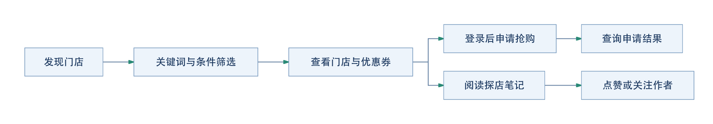
阅读路线
| 章节 | 要回答的问题 | 重点源码 |
|---|---|---|
| 1、项目与整体架构 | 项目为谁服务，每个组件负责什么？ | Controller、Service、部署配置 |
| 2、登录与身份隔离 | token 存哪里，怎么确定“我是谁”？ | UserController、拦截器、MerchantServiceImpl |
| 3、门店详情缓存 | 查不到与没缓存有什么区别？ | ShopServiceImpl、CacheClient |
| 4、ES 门店发现 | 中文、拼音、价格和距离怎么组合？ | ShopSearchServiceImpl、ShopDoc |
| 5、秒杀受理与状态 | 返回编号以后，到底处理到哪一步了？ | VoucherOrderServiceImpl、SeckillRequest |
| 6、Lua 幂等预占 | 如何只扣一次，又能识别不确定结果？ | seckill-reserve.lua、SeckillReservationService |
| 7、MQ 落单与补偿 | 消息重复、发送超时和应用退出怎么办？ | SeckillRequestService、mq 包 |
| 8、商户修改与 Outbox | 如何避免门店改了、ES 通知丢了？ | ShopSyncEventMapper、ShopSyncPublisher |
| 9、笔记与轻社交 | 为什么保留点赞，却移除 Feed？ | BlogServiceImpl、FollowServiceImpl |
| 10、商户与平台后台 | 怎样防止商户修改别人的店？ | admin/platform Controller |
| 11、运行与验证 | 本机怎样启动，怎样判断问题在哪？ | deploy、scripts、测试目录 |
| 12、项目复盘 | 哪些已经实现，接下来值得做什么？ | 验收记录与源码阅读索引 |
1、先认识我们的项目
1.1、项目解决什么问题
HMDP 是一个围绕线下门店的发现、探店和优惠券抢购系统。用户可以按店名、商圈、拼音或首字母找店，也可以结合分类、人均价格、评分和距离缩小范围；找到门店后，继续查看优惠券和探店笔记。
商户需要维护自己店铺的信息，并发布店铺优惠券。平台负责查询商户账号、启用或停用商户。三类使用者进入同一个后端，但各自携带独立的身份，权限由服务端控制。
| 使用者 | 主要能力 | 典型页面 |
|---|---|---|
| 消费者 | 找店、浏览笔记、登录、抢购、点赞、关注作者 | 首页、商户列表、门店详情、笔记详情 |
| 商户 | 登录、查询和编辑自己的店铺、发布券 | 商户后台 |
| 平台 | 登录、分页查询商户、管理账号状态 | 平台后台 |
图 1-1：本机页面截图。页面中的门店、笔记和图片来自当前演示环境；不将演示数据量作为系统容量。
1.2、从课程项目到当前项目，改变了什么
原课程按 Redis 数据结构组织案例，非常适合入门。我们的改造更关注一条真实业务链，以及应用崩溃、消息重复、搜索数据滞后时如何继续处理。
| 课程中的主题 | 当前项目的处理 |
|---|---|
| Redis 登录与缓存 | 保留；补充商户、平台身份与写权限 |
| 秒杀异步队列 | 当前主路径使用持久化申请 + RocketMQ，不再用 Redis Stream 落单 |
| 附近商户与 GEO | 附近、分类、组合筛选统一进入 ES |
| 探店笔记与点赞 | 保留，并明确作者身份、字段白名单与点赞时间顺序 |
| 关注、共同关注与 Feed | 保留关注作者与作者列表，移除共同关注和粉丝收件箱 |
| 签到、UV | 当前业务没有保留对应功能入口 |
| 门店变更同步 ES | 从内存异步事件改为 Outbox + MQ，并补上版本保护 |
这里的裁剪有一个简单依据：一个功能没有明确用户场景，就不为展示中间件而长期维护它。例如，作者关注列表足以承接“以后再看这个作者”的需求，当前没有必要同时建设粉丝动态收件箱。
1.3、整体架构怎么读
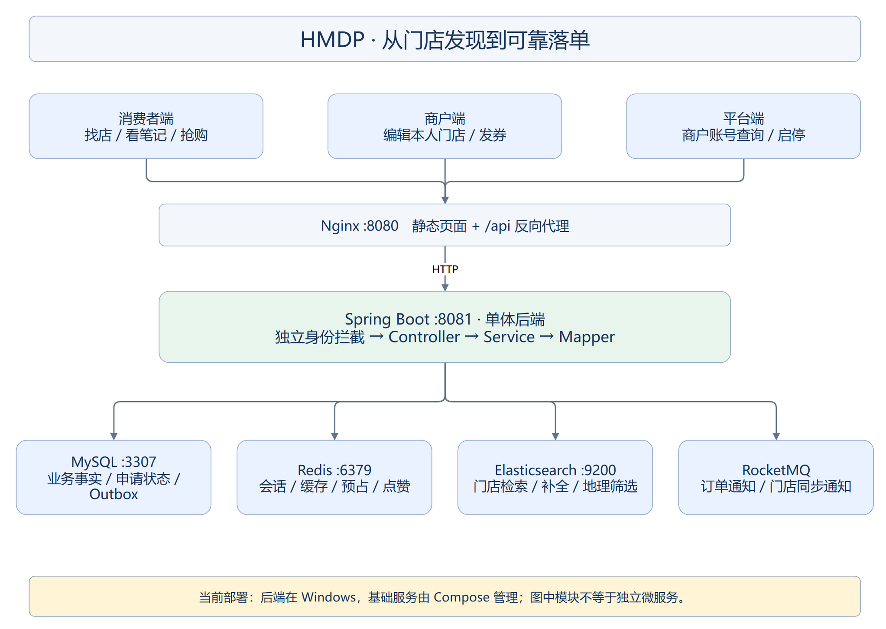
从上往下看这张图：浏览器访问 Nginx，Nginx 返回静态页面，并把 API 请求转给 Spring Boot。后端按照不同业务访问 MySQL、Redis、ES 或 MQ。
这是一套单体后端。 图上的登录、检索、抢购、商户管理是业务模块，并不是各自独立部署的微服务。当前基础设施由一个 Compose 项目管理，后端在 Windows 上运行。
| 组件 | 在本项目中的职责 | 不能混淆的地方 |
|---|---|---|
| MySQL | 门店、用户、笔记、券、订单、申请状态和待发送事件 | 业务状态的权威来源 |
| Redis | 登录会话、门店详情缓存、秒杀预占、点赞成员 | 缓存与预占凭据不是最终订单 |
| Elasticsearch | 门店检索、拼音补全、组合过滤、距离排序和统计 | 搜索副本会经历同步和刷新延迟 |
| RocketMQ | 传递下单通知、门店同步通知，失败重试 | Broker 收到消息不代表业务已经完成 |
| Nginx | 静态资源与 API 反向代理 | 当前只配置一个后端，未建设应用集群 |
想一想： 如果 ES 暂时停止，门店数据库是否还存在？答案是存在。ES 是可重新构建的检索副本，所以业务写入先落 MySQL，而不是反过来把 ES 当作门店主库。
2、登录：先识别身份，再决定能不能操作
2.1、消费者登录的实际流程
消费者使用手机号和验证码登录。POST /user/code 校验手机号，生成验证码，存入 Redis；当前是教学短信模拟，验证码输出到本机控制台，没有对接真实短信供应商。
登录时，服务端比对 Redis 中的验证码，查询用户；手机号首次出现时创建用户。随后签发随机 token，把脱敏后的 UserDTO 存入 Redis Hash。
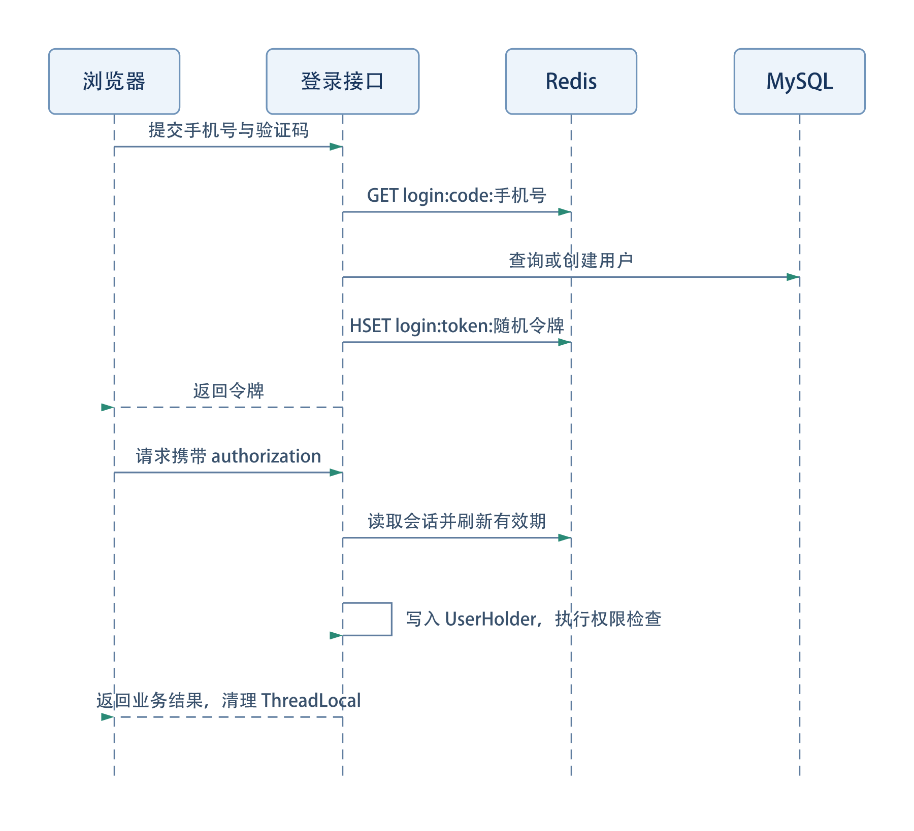
源码入口：UserController.java、RefreshTokenInterceptor.java。
2.2、为什么 token 对应 Redis Hash
token 是客户端下一次请求时携带的随机令牌，Redis Hash 保存的是服务端需要的身份信息。浏览器把令牌放进 authorization 请求头，服务器用它查会话。
login:code:<手机号> String，保存短期验证码
login:token:<随机令牌> Hash，保存消费者 UserDTO
login:merchant:<令牌> String，保存商户 ID 与会话版本
login:admin:<令牌> String，保存平台账号 ID
同一用户可以有多个会话，所以退出登录时删除的是当前令牌对应的 Key，而不是扫描并删除这个用户的全部登录信息。
为什么先转成 UserDTO？ 用户实体可能包含手机号等字段，会话和公开资料只需要 ID、昵称、头像。先转换再存储，减少无关数据沿请求链流转。
2.3、两个消费者拦截器分别做什么
RefreshTokenInterceptor 排在前面：如果请求有有效 token，就识别身份、存入 UserHolder，并刷新会话期限；没有有效 token 仍然放行。
LoginInterceptor 排在后面：对于需要登录的接口，检查 UserHolder 中是否有用户；没有则拒绝。门店查询和公开笔记允许游客浏览，发布、点赞、关注等操作需要登录。
身份识别与访问控制分开后，公开页面也能知道“当前阅读者是否已经点赞”，同时不会强迫所有游客先登录。
源码摘录：识别身份后刷新会话。
源码摘录：RefreshTokenInterceptor.java，第 51—56 行；以下为方法内片段或原声明。
//4.把map转为UserDTO（脱敏用户对象）
UserDTO userDTO = BeanUtil.fillBeanWithMap(userMap, new UserDTO(), false);
//5.保存到ThreadLocal（业务代码可通过 UserHolder.getUser() 拿到）
UserHolder.saveUser(userDTO);
//6.刷新token有效期：每次有请求就续期（滑动过期，活跃用户不过期）
stringRedisTemplate.expire(key,RedisConstants.LOGIN_USER_TTL, TimeUnit.MINUTES);
线程池中的线程会被复用，因此 afterCompletion() 必须清理 UserHolder。ThreadLocal 是当前请求线程的临时身份容器，不是持久会话仓库。
2.4、有效期要对照代码看单位
当前 LOGIN_CODE_TTL=2，验证码按分钟保存。消费者 LOGIN_USER_TTL=36000，登录签发和请求续期同样按 TimeUnit.MINUTES 使用，换算约 25 天。它不是“36000 秒”。商户和平台会话则固定为两小时，不采用消费者的滑动续期策略。
这里列的是当前实现，方便学习和核对；修改会话期限时，应同时检查常量和调用处的单位。
2.5、商户、平台为什么不能复用消费者身份
能浏览门店的消费者，并不天然拥有店铺编辑权。项目采用三个 Redis Key 前缀、独立拦截器和独立 Holder；商户 token 进入 /admin/**，平台 token 进入 /platform/**，消费者 token 不承担这两种身份。
商户登录使用 BCrypt 比对密码哈希。每次认证还会读取数据库中的启用状态及会话版本；停用商户时，状态修改和 session_version 递增在同一条 SQL 内完成。再次启用后，旧版本令牌仍然失效，不会随着账号解封重新可用。
本章自测： 为什么“没带 token”不应该在第一个拦截器直接报错？因为有些接口允许匿名读取，是否强制登录由后面的访问控制决定。
3、门店详情缓存：先分清三种缓存结果
3.1、为什么详情页仍然读 Redis + MySQL
ES 搜索返回的是检索结果，而详情页需要按门店 ID 读取详情。当前 GET /shop/{id} 进入 ShopServiceImpl.queryById()，使用 CacheClient.queryWithPassThrough()。
这样列表发现与详情读取各有职责：ES 擅长多条件检索，Redis 擅长重复读取同一个门店，MySQL 保存原始业务数据。
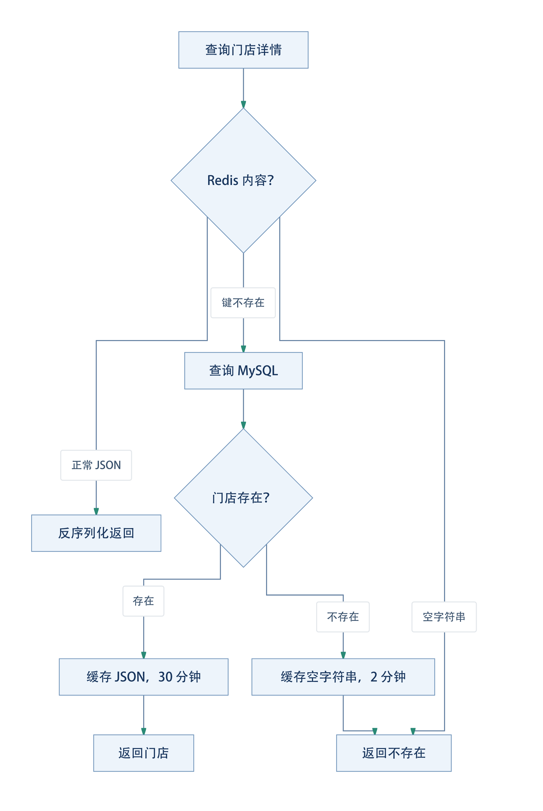
3.2、null 和空字符串不是一回事
| Redis 返回值 | 表示什么 | 下一步 |
|---|---|---|
| 正常 JSON | 有效的门店缓存 | 反序列化返回 |
空字符串 "" |
上次查库确认不存在 | 直接返回不存在 |
null |
Key 没有缓存 | 查询 MySQL |
查不存在的门店时，如果什么都不缓存，同一个不存在的 ID 每次都会穿过 Redis 打到 MySQL。项目将“不存在”也缓存两分钟，用较短期限挡住重复回源。
3.3、把流程对照到代码
源码入口：CacheClient.java。
源码摘录：CacheClient.java，第 65—87 行；以下为方法内片段或原声明。
String key = keyPrefix + id;
// 1.从redis查询商铺缓存
String json = stringRedisTemplate.opsForValue().get(key);
// 2.判断是否存在：非空串 = 命中了正常数据
if (StrUtil.isNotBlank(json)) {
// 3.存在，直接反序列化返回
return JSONUtil.toBean(json, type);
}
// 命中「空串」= 之前查过且确认不存在，直接返回 null，不再打库（防穿透）
if (json != null) {
return null;
}
// 4.缓存完全 miss，查数据库
R r = dbFallback.apply(id);
// 5.数据库也没有：写入空值缓存（TTL 较短），下次命中空值直接返回
if (r == null) {
stringRedisTemplate.opsForValue().set(key, "", RedisConstants.CACHE_NULL_TTL, TimeUnit.MINUTES);
return null;
}
// 6.数据库有：写入正常缓存并返回
this.set(key, r, time, unit);
return r;
正常门店 JSON 的缓存 TTL 是 30 分钟，空值缓存 TTL 是 2 分钟。两个期限来自 RedisConstants，调用处明确按分钟传入。
注意“空字符串命中”的位置： 它必须放在正常 JSON 之后、查数据库之前。否则会把已经缓存的“不存在”再次当作缓存未命中。
3.4、当前启用的是哪一种策略
工具类还保留了互斥锁重建与逻辑过期方法，但 queryById() 当前调用的是空值缓存路径。不能因为工具类里存在逻辑过期代码，就说所有门店详情已经启用了热点异步重建。
| 策略 | 适合说明的场景 | 当前状态 |
|---|---|---|
| 空值缓存 | 反复查询不存在的门店 | 详情主路径启用 |
| 互斥锁重建 | 热点缓存失效时控制回源 | 工具类保留，可选方案 |
| 逻辑过期 | 接受短期旧值，后台重建热点 | 工具类保留，需要预热 |
缓存穿透、热点击穿和大量 Key 同时失效，是三个不同的问题。空值缓存解决的是“不存在的 ID 反复查”，不会自动解决所有热点并发回源。
3.5、门店编辑后为什么提交后删缓存
假设先删缓存，再更新数据库：删除与提交之间，其他请求可能查到旧数据库值并重新缓存。当前项目把删除操作放到事务提交后的事件监听器中，正常请求返回前已经尝试失效旧详情缓存。
数据库事务内：更新门店 + 写入 Outbox + 发布缓存事件
事务提交后：删除 cache:shop:<shopId>
下一次详情读取：缓存未命中 → 从数据库读取新值并回填
Redis 删除失败时记录错误，不会倒转已经提交的数据库事务。ES 的可靠同步由独立的 Outbox/MQ 路线承担，第 8 章展开。
本章自测： 能否把“数据库提交后删缓存”说成数据库与 Redis 强一致？不能。它规定了正常路径的执行顺序，进程退出、Redis 故障和并发回填仍需按实际场景处理。
4、ES 门店发现：一个查询承接多个条件
4.1、为什么统一分类、附近与组合检索
用户可能同时提出这样的需求：找火锅店、人均 50 到 100 元、评分至少 4 分、距离参考位置 3 公里以内，并按距离排序。
如果分类走 MySQL、附近走 Redis GEO、关键词走 ES，那么每增加一个组合条件，都要协调多套分页与统计口径。当前项目让分类页、附近页和搜索页统一调用 /shop/search；数据库按名称查询的 /shop/of/name 只用于发布笔记时选择关联门店。
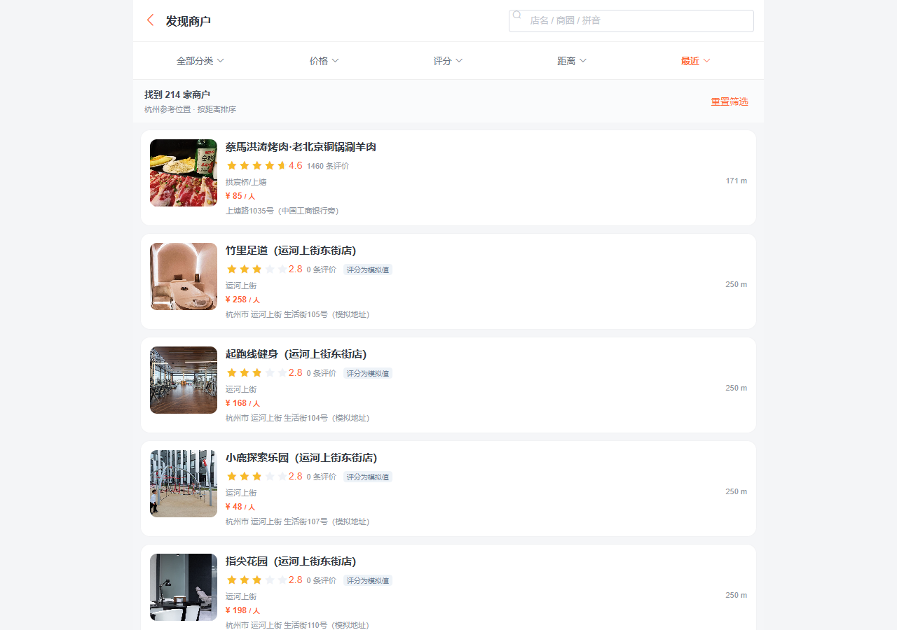
图 4-1：当前商户发现页。页面支持店名、商圈、拼音与筛选条件组合。
4.2、先准备适合搜索的文档
MySQL 的 Shop 是业务实体，ES 的 ShopDoc 是搜索文档。转换时保留门店 ID、名称、商圈、地址、价格、评分和图片等信息，并计算名称全拼、名称首字母、地理位置和补全候选词。
| 字段 | ES 类型 | 本项目用途 |
|---|---|---|
| name / area / address | text + IK | 中文关键词检索 |
| namePinyin / nameInitials | keyword | 全拼、首字母前缀查询 |
| typeId | long | 分类精确过滤 |
| avgPrice / score | 数值 | 价格、评分过滤与排序 |
| location | geo_point | 距离过滤、排序和统计 |
| suggestion | completion | 输入联想 |
| images | keyword，关闭索引 | 返回展示地址，不参与查找 |
源码：ShopDoc.java、EsConstants.java。
拼音与首字母由 Java 转换生成，不是接入了独立的拼音分词插件。中文分词使用 IK，二者负责不同的事情。
4.3、must 与 filter 怎么分工
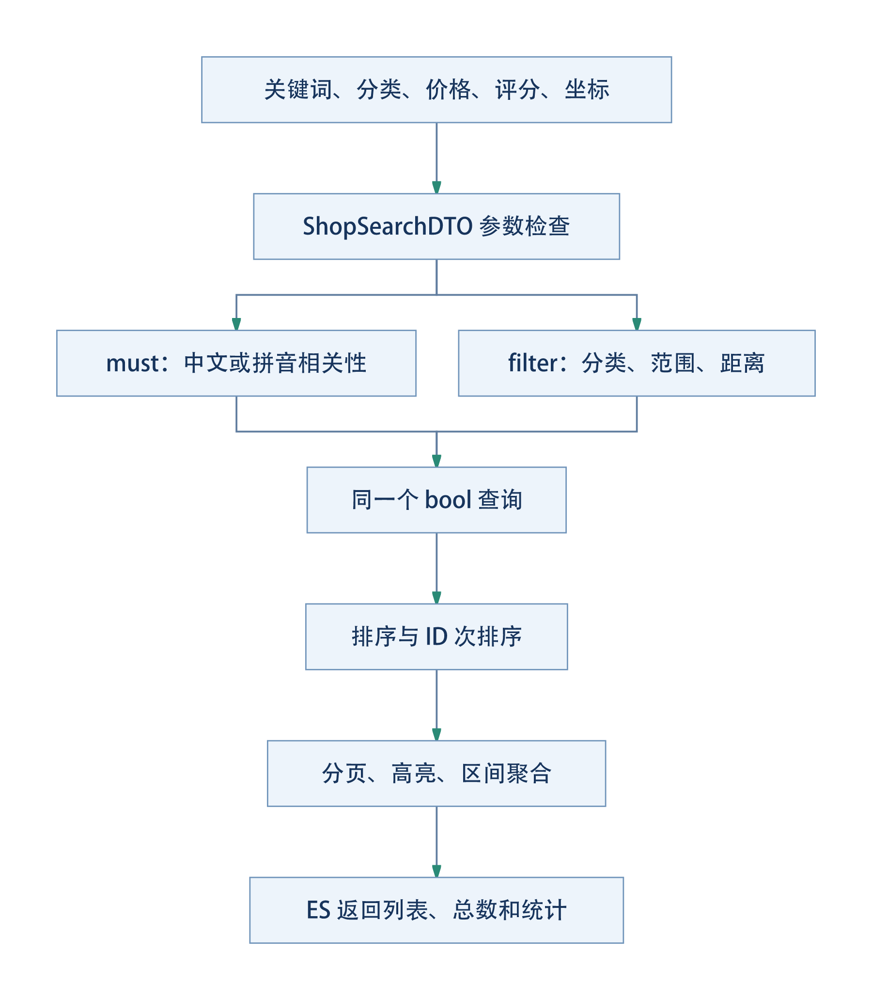
关键词决定“哪家更相关”，所以放入参与打分的条件；分类、价格、评分和距离是“符合或不符合”的硬条件，放入 filter。
精简示意，便于对应源码中的 QueryBuilder：
bool
├─ must：关键词匹配门店名称、商圈、地址或拼音前缀
├─ filter：typeId 等于所选分类
├─ filter：avgPrice >= minPrice 且 avgPrice < maxPrice
├─ filter：score >= minScore × 10
└─ filter：location 在 radius 米以内
例如，minPrice=50,maxPrice=100 表示 [50,100)，100 元不在这个区间内。数据库评分 45 表示界面上的 4.5 分；构建评分查询时需要乘 10 对齐。
4.4、输入 hdl 为什么能找到中文店名
中文片段查询名称、商圈和地址；字母数字片段除了查原文，也查全拼和首字母前缀。混合输入会拆成中文片段和字母数字片段，并要求每个片段都满足相应条件，避免直接丢掉其中一部分。
自动补全走另一条 /shop/suggest 接口，使用预先生成的 suggestion 候选词。补全只是帮助用户选择搜索词，点击候选后仍然进入真正的搜索查询。
4.5、距离、排序与聚合要放在同一套条件下理解
当前支持相关性、距离、价格和评分排序，主排序后再按唯一 ID 次排序，使相同排序值下的次序可重复。它能减少静态数据下分页顺序的不稳定，但数据持续变化时，普通 from/size 分页仍可能产生页间漂移。
距离查询传入点时注意经纬度顺序：某些 ES Java API 使用“纬度 y，经度 x”，不要按变量的书写习惯直接颠倒。
当前页面使用杭州参考坐标，尚未获取设备实时定位。 “距离我”在讲解时应说成“距离页面参考位置”，直到真正接上浏览器定位并处理授权失败。
价格、评分聚合沿用当前全部查询条件；界面展示的是“当前结果分布”。距离档位使用累计范围，例如 1 公里以内与 3 公里以内存在包含关系，数量不能相加。
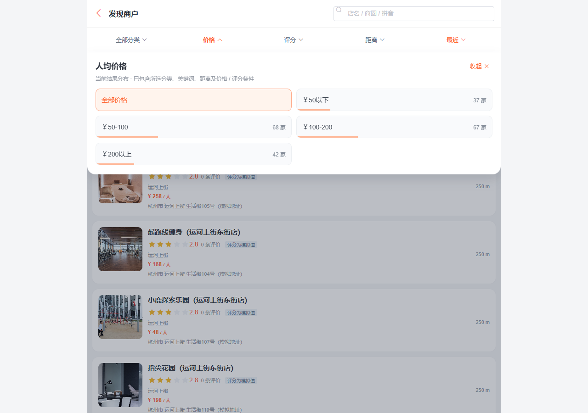
4.6、高亮为什么还要转义
后端给命中内容加 <em> 标签，前端将其作为 HTML 展示。如果直接把未经转义的门店文本交给 HTML 渲染，文本中的标签可能变成可执行页面内容。
项目使用 encoder("html") 转义原文，并在未命中高亮字段时也处理回退文本。高亮是展示效果，不应该改变业务字段的含义或开放任意 HTML。
4.7、导入与搜索更新的区别
首次建立索引或维护重建时，从 MySQL 按主键分批导入，每批最多 500 条，并检查 Bulk 每个条目的结果。Bulk 的 HTTP 请求成功，仍可能有部分文档写失败，所以不能只检查 HTTP 状态。
日常改店走单条增量同步；维护重建会校验 Mapping，然后删建索引再导入。当前维护过程存在短暂不可搜窗口，执行时暂停相关写入与在线同步。这里没有引入别名切换、双索引迁移等额外机制。
本章自测： 搜索列表和筛选统计能否各自用不同条件查？如果这样做，用户会看到“有 20 家”却找不到对应门店。当前项目让列表和聚合使用同一查询范围。
5、秒杀：先受理，再让用户查询最终结果
5.1、从一张优惠券开始
用户在店铺详情中看到优惠券，点击抢购后，首先检查券是否存在、当前是否在抢购时间窗内，以及当前用户的登录身份。随后执行一次 Redis 只读预检，筛掉明显售罄或重复的请求。
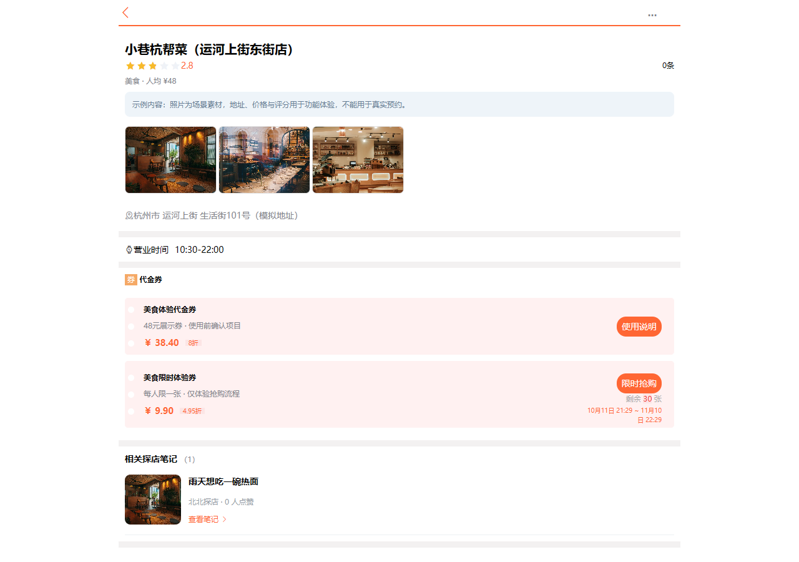
图 5-1：当前门店详情页。券的有效期和库存取决于演示数据，截图不表示所有券此时都处在可抢购时间窗内。
预检通过，只代表“看起来可以尝试”，并没有真正预占库存。多个用户可以同时预检通过，正式裁决还要放在后续的原子预占里。
5.2、为什么先写申请表
如果顺序是“Redis 已扣库存 → Java 发 MQ”，应用在二者之间退出，Redis 留着预占，消息却可能没有发出去。只在 Java 内存里记住要发什么，重启后也找不回来。
当前项目先提交 tb_seckill_request。这条记录保存申请身份、处理状态、预占证据、下次处理时间和截止时间，后台恢复任务可以根据它继续推进。
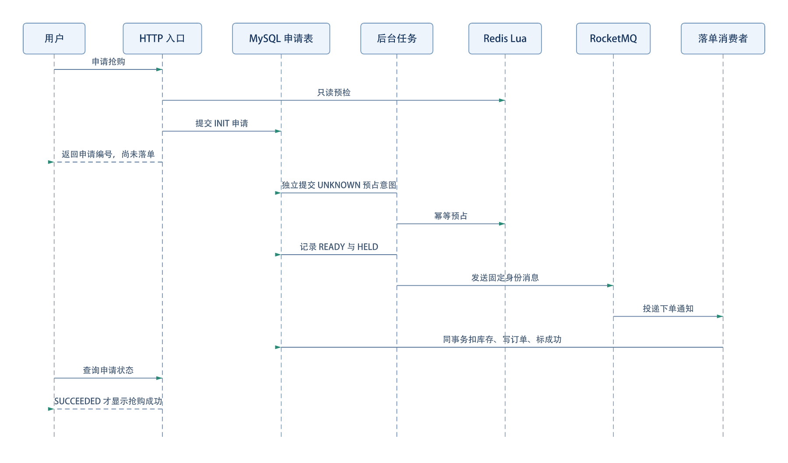
HTTP 正常受理入口不等待 Broker，也不等待落单事务。它返回持久化申请的订单号字符串；前端随后查询结果。数据库成功记录申请后，应用重启仍能找回这件待处理的事。
5.3、前端收到编号，应该展示什么
| 请求结果 | 页面应该展示 | 不能直接推断 |
|---|---|---|
| 受理接口返回编号 | 请求已受理，正在处理 | 已抢到券 |
| 查询状态为 INIT / READY | 仍在处理中 | 已写入订单 |
| 查询状态为 SUCCEEDED | 抢购成功，订单已创建 | 已完成真实支付 |
| 查询状态为 CANCELLING | 正在恢复库存 | 已经完成恢复 |
| 查询状态为 FAILED | 展示失败原因 | 可以任意重新使用旧申请 |
对应接口：POST /voucher-order/seckill/{id}、GET /voucher-order/requests/{id}。按门店找回本人近 10 条申请使用 GET /voucher-order/requests?shopId=...；身份从 UserHolder 获取，不能由客户端指定另一个用户。
源码：VoucherOrderServiceImpl.java。
5.4、订单号为什么还要转字符串
RedisIdWorker 用时间部分和 Redis 每日自增序列组合 long 型 ID：高 32 位放相对时间，低 32 位放序列。
源码摘录：RedisIdWorker.java，第 38—51 行；以下为方法内片段或原声明。
public long nextId(String keyPrefix) {
// 1.生成时间戳
LocalDateTime now = LocalDateTime.now();
long nowSecond = now.toEpochSecond(ZoneOffset.UTC);
long timestamp = nowSecond - BEGIN_TIMESTAMP;
// 2.生成序列号
// 2.1.获取当前日期，精确到天（每天一个key，计数器每天重置）
String date = now.format(DateTimeFormatter.ofPattern("yyyy:MM:dd"));
// 2.2.自增长
long count = stringRedisTemplate.opsForValue().increment("icr:" + keyPrefix + ":" + date);
// 3.拼接并返回：时间戳左移32位，低32位放序列号
return timestamp << COUNT_BITS | count;
这个 long 在 Java 和 MySQL 中可以存储，但浏览器 JavaScript 的普通数值存在整数精度边界。当前申请查询和受理响应把订单号转成字符串，避免前端传回的编号发生变化。
这里不需要让订单、申请和消息各自生成一个新的业务编号。它们共用 orderId，消息事件身份固定为 CREATE_ORDER:<orderId>，补发沿用同一个身份。
5.4.1、先纠正一个名称：它不是标准雪花算法
当前 RedisIdWorker 的组成是“相对秒数左移 32 位，再拼接 Redis 每日自增序列”。代码没有机器号、数据中心号，也没有每个进程各自维护的毫秒内序列。因此介绍项目时，准确说法是 Redis 自增序列与时间部分组合的全局 ID，不直接称为标准 Snowflake。
| 对比项 | 当前 RedisIdWorker | 典型 Snowflake 实现 |
|---|---|---|
| 时间粒度 | 秒 | 通常是毫秒 |
| 序列来源 | Redis 的日 Key，多个实例共享 INCR | 各工作节点维护本地序列 |
| 节点标识 | ID 内没有独立节点位 | 通常划分 worker/datacenter 位 |
| 依赖 | 依赖 Redis 取得序列 | 通常无需每次访问 Redis |
| 回拨处理 | 当前没有显式等待或拒绝逻辑 | 取决于具体实现，可能等待、拒绝或使用逻辑时钟 |
5.4.2、时钟回拨会怎样，为什么不直接等于重复
假设同一天中，先后两次调用读到了相同的相对秒数 T，但 Redis 日计数器从 101 增加到 102：
第一次：(T << 32) | 101
第二次：(T << 32) | 102
即使时间部分重复，低位序列仍不同。因此，在所有实例使用同一份 Redis 计数器、历史计数没有丢失或重置、序列未超出分配位宽的前提下，单纯时钟回拨不会立即制造重复 ID。
更直接的影响是时间顺序：后生成的 ID 可能因为高位时间变小，在数值上小于先生成的 ID。因此它不是严格单调的时钟，也不应该承担订单最终状态或可靠提交先后的裁决。
| 变化 | 按当前实现分析 |
|---|---|
| 同一天内时间回退，日计数保留 | 序列继续增加，时间排序可能回退 |
| 回退到过去日期，旧日期计数仍保留 | 旧日 Key 的序列继续增加；不因为日期复用就立刻重复 |
| 日计数被删除、重置或恢复到旧值，同时复用旧时间部分 | 可能重新生成历史使用过的组合 |
| 多个互不共享计数的 Redis 各自从头计数 | 多个实例可能生成相同组合 |
| 每日序列超出 32 位 | 当前拼接约定不再成立，不能让高位被序列侵入 |
nextId() 中时间和日期取自同一个 LocalDateTime now，但这不是“与 Redis 自增共同组成原子操作”。另外，它把本地 LocalDateTime 按 UTC 偏移解释为秒数，并没有直接获取 Instant；现有统一时区环境下可以理解其相对编号用途，迁移时应统一时区并重新核对时间约定。
项目讲解要点： 分清“唯一性”“按时间大致有序”和“严格单调”。这里讲清当前实现及其依赖即可，不为补讲义额外改造一套发号服务。
5.5、申请进度与预占证据要分开看
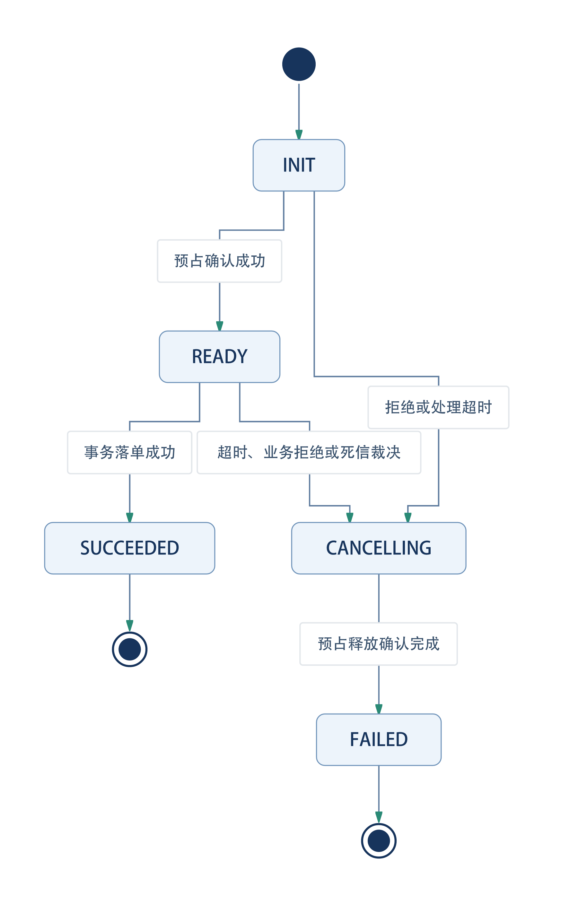
申请进度有五种状态：
| 状态 | 业务含义 | 后续动作 |
|---|---|---|
| INIT | 申请已提交，等待推进或核查预占 | 准备预占 |
| READY | 预占已确认，可以发送和消费 | 发送 MQ、尝试落单 |
| SUCCEEDED | 订单事务已经完成 | 作为成功终态返回 |
| CANCELLING | 已裁决终止，库存释放尚待完成 | 继续幂等补偿 |
| FAILED | 释放或无预占事实已确认，申请结束 | 作为失败终态返回 |
reservation_state 则回答另一件事：“我们对 Redis 预占结果掌握了什么证据？”它只有 NONE、UNKNOWN、HELD。
INIT + UNKNOWN 并不自相矛盾：申请还没有完成预占确认，但 Redis 那边可能已经执行成功，应用只是没有收到答复。把两个维度拆开，才不会把“未确认”误当成“没做过”。
本章自测： 申请处理超时是否等于待支付订单超时关闭？不等于。当前 deadline 限定的是申请推进到落单的期限；支付后的订单生命周期没有在这里实现。
6、Lua 预占：原子操作之外，还要能识别重试
6.1、先认识三类 Redis Key
| Key | 类型 | 保存内容 |
|---|---|---|
seckill:stock:<voucherId> |
String | 可预占的库存数量 |
seckill:owners:<voucherId> |
Hash | userId → 当前拥有该券资格的 orderId |
seckill:request:<orderId> |
String | 本申请 HELD 或 CLOSED 标记 |
库存告诉我们“还有多少”，owners 告诉我们“这份资格属于谁”，申请标记告诉我们“这次申请执行到了哪里”。只检查库存数字，无法判断一次超时调用到底有没有扣成功。
6.1.1、预检 check 与正式 reserve，分别发生在哪一步
源码中的实际文件名是 seckill-check.lua 与 seckill-reserve.lua。它们虽然都会检查时间、库存或用户归属，但服务的阶段和副作用不同。
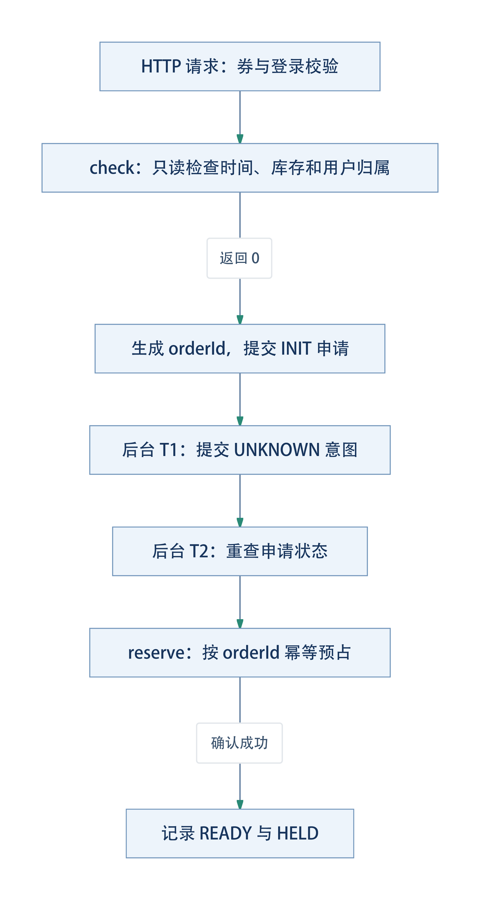
| 对比项 | 只读预检：check | 正式预占：reserve |
|---|---|---|
| 调用时机 | HTTP 受理入口，持久化申请之前 | 后台推进 INIT，UNKNOWN 意图已经提交之后 |
| Java 入口 | reservation.check(userId, voucher) |
reservation.reserve(request, voucher, firstAttempt) |
| 是否有本次申请的 orderId | 预检调用参数不需要 | 需要；作为幂等操作身份 |
| 主要读取 | stock、owners、Redis 服务器时间 | 本次 marker、owners、stock、服务器时间 |
| 是否扣库存 | 不扣 | 只有满足预占条件时扣一次 |
| 是否写归属或申请标记 | 不写 | 写 userId → orderId 与 HELD，或恢复已有凭据 |
| 返回 0 | 此刻可继续提交申请 | 本次预占已执行或已有预占可确认 |
| 核心作用 | 减少明显无效请求写入申请表 | 做真正的资格、库存与重试裁决 |
这里“只读”针对 seckill-check.lua 本身。HTTP 入口在调用它之前，可能通过 initializeInventory() 修复缺失库存；通过预检后，还会使用 Redis 生成 ID 并写 MySQL 申请。不能把脚本只读扩大成整个 HTTP 请求完全没有写操作。
源码摘录：预检只读取状态，0 表示允许继续受理。
源码摘录：seckill-check.lua，第 7—25 行。
local now = tonumber(redis.call('time')[1])
if now < tonumber(ARGV[2]) or now > tonumber(ARGV[3]) then
return 3 --不在活动时间内
end
-- owners 的键是 userId 存在与否，值是本单 orderId；hexists 只问“这个人抢过没”，不关心是哪一单。
if redis.call('hexists', KEYS[2], ARGV[1]) == 1 then
return 2 --查是否重复下单
end
-- nil 表示键不存在（数据丢失/未初始化），与值为 "0" 的售罄是两回事：前者是系统异常，后者是业务结果。
local stock = redis.call('get', KEYS[1])
if not stock then
return 5 --库存不存在
end
if tonumber(stock) <= 0 then
return 1 --库存不足
end
return 0
考虑只剩 1 张券的情况：甲先预检读到 1，乙也预检读到 1。两个请求都可以提交申请；随后后台分别预占，只有真正先完成原子预占的申请能拿到最后一份库存。第二个申请在 reserve 阶段得到拒绝结果，再进入终止流程。
因此，不能拿 check 的成功代替 reserve，也不能因为 HTTP 已经检查过，就删除后台的条件检查。两次检查隔着持久化和调度等待，状态可能已经改变。
6.2、为什么调用 Redis 前先提交 UNKNOWN
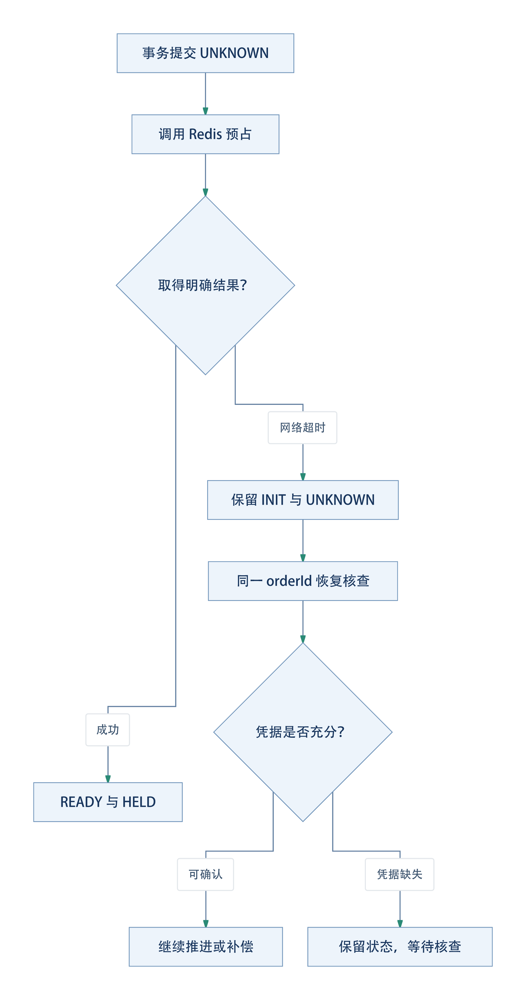
考虑以下故障窗口：Redis 已执行完预占，网络在响应返回前中断。Java 收到了异常，但异常只说明“没有拿到明确答复”，不说明 Redis 没有执行。
prepare() 先开启独立事务，将预占意图从 NONE 改为 UNKNOWN 并提交，然后才调用 Redis。这样即使后面的数据库事务回滚，已提交的 UNKNOWN 也不会消失。
后续用同一个 orderId 核查或重试：能找到自己的 HELD 或 owners 凭据，就确认已有预占；凭据不足则保留待核查状态。不能换一个编号重新扣，也不能随手把 UNKNOWN 改成 NONE。
6.2.1、把 prepare 拆成两个数据库事务看
prepare() 使用同一个 TransactionTemplate 顺序调用两次回调，并为模板设置 PROPAGATION_REQUIRES_NEW。两次回调分别开启独立事务，不是两个回调共享一个事务。
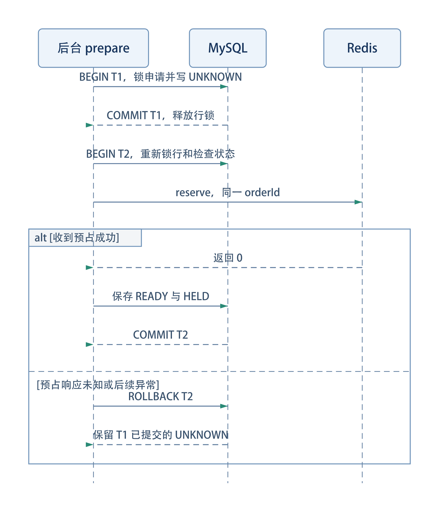
| 阶段 | 数据库事务内做什么 | 什么时候结束 |
|---|---|---|
| T1：留下预占意图 | 锁申请、检查 INIT/期限、首次调用将 NONE 改为 UNKNOWN，并设置下次核查时间 | 第一次 execute() 回调正常返回后，提交 T1 并释放行锁 |
| 事务间隙 | 首次意图已经持久化；其他任务有机会更新申请状态 | 等待进入 T2 |
| T2：核查与执行预占 | 重新锁申请、重查状态/期限，必要时调用 reserve，并保存 READY/HELD 或终止结果 | 第二次回调结束时提交；异常时回滚 T2 |
源码摘录：两次回调的边界。
源码摘录：SeckillRequestService.java，第 143—179 行。
public void prepare(Long orderId) {
TransactionTemplate transaction = new TransactionTemplate(transactionManager);
// 开独立事务，保证下面这步“记 UNKNOWN”能自己单独提交，不被外层事务一起卷回滚。
transaction.setPropagationBehavior(TransactionDefinition.PROPAGATION_REQUIRES_NEW);
Boolean firstAttempt = transaction.execute(status -> {
SeckillRequest request = requests.lock(orderId);
// 不是 INIT 就不处理（可能已经被别的实例推进或终止了）。
if (request == null || !INIT.equals(request.getState())) {
return null;
}
// 已经超时，直接终止，不再预占。
if (expired(request)) {
cancelling(request, TIMEOUT_REASON);
return null;
}
// 关键：先把 NONE 改成 UNKNOWN 并提交。这样哪怕后面扣 Redis 时崩了，
// 数据库里也留着“可能扣过”的记号，补偿时不会误判成“从没扣过”。
if (RESERVATION_NONE.equals(request.getReservationState())) {
request.setReservationState(RESERVATION_UNKNOWN);
request.setNextSendTime(LocalDateTime.now().plusSeconds(10));
save(request);
return true;
}
// 租期内可能仍有首次调用在执行，其他实例暂不抢先核查其 Redis 凭据。
if (request.getNextSendTime() != null
&& LocalDateTime.now().isBefore(request.getNextSendTime())) {
return null;
}
return false;
});
// 只有 firstAttempt 明确是 true/false（不是 null 跳过）才进第二段真正扣库存。
if (firstAttempt != null) {
transaction.executeWithoutResult(status -> prepareLocked(orderId, firstAttempt));
}
}
这里的 prepareLocked() 是 private 方法。它不依靠“同类调用时 Spring 自动代理这个 private 方法”开启事务，而是执行在第二次 executeWithoutResult() 已经建立的事务回调内。把这一段改写成“调用 private 方法上的 @Transactional”会讲错实际机制。
6.2.2、为什么不能只包一个大事务
用一次具体故障对照：
只有一个事务：
写 UNKNOWN（尚未提交）→ Redis 预占成功 → 保存后续状态失败 → 整个事务回滚
结果：Redis 可能已扣，数据库却退回 NONE，丢掉了“可能执行过”的证据。
当前两段事务：
T1：写 UNKNOWN → 提交
T2：Redis 预占成功 → 保存后续状态失败 → T2 回滚
结果：数据库仍保留 T1 已提交的 UNKNOWN，恢复时继续核查已有预占。
T1 的目的是先保存“准备尝试，结果可能未知”的事实，不是提前宣布 Redis 执行成功。T2 把确认成功后的状态推进与数据库裁决放在自己的事务中；Redis 的副作用仍不属于这个数据库事务。
这就是两段划分的实际价值：后续数据库回滚时，保住调用外部组件之前已经提交的恢复线索。 Spring 的 REQUIRES_NEW 语义允许独立物理事务分别提交或回滚；有外层事务时将其挂起，而不是加入外层事务。Spring 事务传播说明
6.2.3、firstAttempt 为什么是 Boolean，而不是 boolean
第一次回调有三种结果，上层按这三种含义决定是否进入第二段：
| 返回值 | 当前调用的含义 | 下一步 |
|---|---|---|
true |
本次从 NONE 写入 UNKNOWN，是首次尝试 | T2 允许按首次规则执行 Lua |
false |
已有 UNKNOWN 且等待期到期，是恢复核查 | T2 用同一 orderId 核查已有证据，不凭空再次扣减 |
null |
申请已转态、超时已处理，或其他首次调用尚在等待期内 | 本轮跳过 T2 |
firstAttempt ? "1" : "0" 最终传给 reserve 脚本的 allowNew 参数。这个参数限制恢复调用只能确认既有结果，避免凭据消失后又重新扣一份库存。
6.2.4、为什么 T2 还要重新取锁和检查状态
T1 完成后行锁已经释放，T1 与 T2 之间没有一把跨事务的数据库行锁。其他任务可能已把申请改成 CANCELLING，因此 prepareLocked() 首先重新锁行并判断状态，不能继续照着 T1 的旧实体执行。
第二段在持有申请行锁时调用 Redis，能串行协调同一申请的预占与终止，但会把 Redis 调用耗时带入数据库锁持有时间。当前先保持可靠性路径清楚；如果将来压测发现锁等待显著，再依据实测决定是否拆短，而不是把这个成本藏起来。
若从外层事务复用 REQUIRES_NEW，还要考虑外层连接挂起、内层连接获取对连接池的占用。当前调度入口没有人为包一层大事务，讲解时无需额外假设存在这种嵌套。Spring 事务资源说明
6.3、预占脚本怎样保证重复调用不重复扣减
脚本先检查申请自己的标记。如果已经 HELD，直接返回成功；如果 CLOSED，拒绝迟到调用。然后检查用户的归属：如果 owners 仍指向本 orderId，补齐标记后返回成功；如果指向另一申请，则按首次调用与恢复核查的语义处理。
只有允许首次预占、时间窗有效且库存大于零时，才执行真正扣减。
源码摘录：真正的三步预占。
源码摘录：seckill-reserve.lua，第 46—49 行；以下为方法内片段或原声明。
redis.call('decr', KEYS[1])
redis.call('hset', KEYS[2], ARGV[1], ARGV[2])
redis.call('set', KEYS[3], 'HELD')
return 0
在当前单机 Redis 部署中，同一段 Lua 执行期间不会插入其他 Redis 命令，因此“扣库存、写归属、写标记”可以作为一个不可穿插的执行过程。但这份原子性没有跨越到 MySQL 或 RocketMQ，所以仍然需要申请表和恢复流程。
6.4、脚本返回码是业务协议
| 码 | 当前预占脚本含义 | Java 侧处理重点 |
|---|---|---|
| 0 | 预占成功或已确认本次已有预占 | 推进为 READY / HELD |
| 1 | 售罄 | 进入终止流程 |
| 2 | 用户已有其他申请资格 | 进入终止流程 |
| 3 | 不在活动时间窗 | 进入终止流程 |
| 4 | 申请标记已 CLOSED | 不允许复活 |
| 5 | 库存 Key 缺失 | 区分首次明确未扣和恢复中的未知结果 |
| 6 | 恢复核查证据不足 | 保留未知，不重新扣减 |
Java 调用 RedisTemplate.execute() 若返回 null，同样按“结果未知”抛出异常，不能用一个默认成功码替代。
6.5、库存 Key 丢了，为什么不能直接从数据库回填
假设 MySQL 库存是 10，Redis 已经为在途申请预占 3 份，而这 3 份尚未完成数据库落单。此时 Redis 库存应是 7。若 Redis Key 丢失后直接把 MySQL 的 10 写回，就把在途的 3 份重新放出来了。
当前 initializeInventory() 用 Redisson 锁协调初始化，拿锁后再次检查 Key，并检查是否存在 INIT、READY、CANCELLING 申请；有在途申请就停止自动回填，等待核查。确认没有在途申请后，读取最新数据库库存并用 setIfAbsent 回填。
这里 Redisson 负责的是缺失库存初始化的协调，不是正常消费落单时的一把全局用户锁。阅读旧介绍时尤其要按当前源码核对这一点。
6.5.1、Redisson 这把锁究竟锁什么
当前调用是 redisson.getLock(SECKILL_INITIALIZE_LOCK + voucherId)，Key 前缀是 lock:seckill:initialize:；临界区覆盖“二次确认 Key → 检查在途申请 → 读取数据库最新库存 → SETNX 回填”。同一张券的多个初始化调用竞争同一把锁，不同券使用不同 Key。
源码摘录：SeckillRequestService.java，第 87—112 行。
RLock lock = redisson.getLock(SECKILL_INITIALIZE_LOCK + voucher.getVoucherId());
lock.lock();
try {
// 拿锁后再查一次，防止等锁期间别的实例已经把库存补好了。
if (Boolean.TRUE.equals(redis.hasKey(key))) {
return;
}
// 查有没有还在推进的申请；有的话数据库里的旧库存数字可能慢半拍，补进去会算错库存。
Long active = requests.selectCount(new LambdaQueryWrapper<SeckillRequest>()
.eq(SeckillRequest::getVoucherId, voucher.getVoucherId())
.in(SeckillRequest::getState, INIT, READY, CANCELLING));
if (active > 0) {
throw new IllegalStateException("存在处理中申请，库存状态需核查");
}
// 以数据库最新库存为准回填，而不是用入口传进来的可能已过期的 voucher。
SeckillVoucher latest = vouchers.getById(voucher.getVoucherId());
if (latest == null) {
throw new IllegalArgumentException("优惠券不存在");
}
redis.opsForValue().setIfAbsent(key, latest.getStock().toString());
} finally {
lock.unlock();
}
}
正常落单并没有在这里再加一把 lock:order:userId。落单和补偿的同申请串行裁决依靠 MySQL 申请行锁；Redisson 在当前链路中承担的是库存初始化协调。阅读旧项目资料时，应把旧锁职责与现在的代码分开。
6.5.2、普通可重入 RLock 为什么用 Hash
以下按本项目依赖的 Redisson 3.20.0 普通可重入锁说明，示意结构为：
Key：lock:seckill:initialize:<voucherId>
类型：Hash
field：<Redisson 客户端 ID>:<线程 ID>
value：当前持有者的重入次数
TTL：锁 Key 的剩余租期
首次获取时写入持有者并把计数加到 1；同一持有线程重入时计数增加。释放时先校验持有者，再减少重入计数；完全释放后删除 Key，并发布通知唤醒等待者。获取和释放中的条件检查、计数修改及过期操作由 Lua 组合执行。该版本 RedissonLock 源码
Hash 解决的是持有者识别与可重入计数；自动续期来自客户端安排的续期任务，不是因为用了 Hash，Redis 就会自己续期。持有者字段中的客户端 ID 加线程 ID，也不是用户 ID 或订单号。持有者生成规则
6.5.3、lock() 与固定 leaseTime 的区别
项目使用不带显式租期的 lock.lock()，并在 finally 中 unlock()。在 3.20.0 中，无正数显式 leaseTime 的获取路径会安排 watchdog 续期；有正数显式 leaseTime 时按该租期执行，不走同样的自动续期路径。
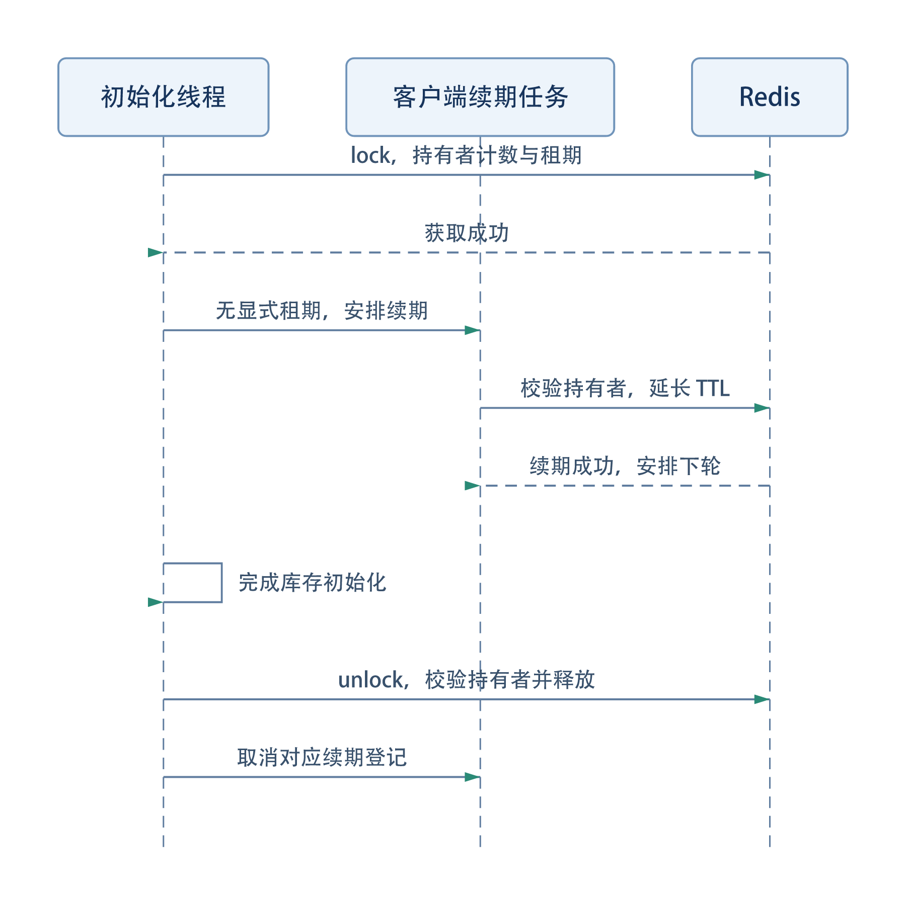
| 调用方式 | 租期行为 | 讲解要点 |
|---|---|---|
当前 lock() |
获取后由 watchdog 定时延长 | 仍需在 finally 释放 |
显式正数 lock(leaseTime, unit) |
使用给定租期 | 临界区超过租期时锁可能过期 |
| 当前客户端退出或续期失效 | 最后一次有效续期后，Key 会随 TTL 到期 | 不是进程退出的同一瞬间就一定释放 |
该版本 lockWatchdogTimeout 的默认值为 30000 毫秒，续期任务按内部租期的约 1/3 间隔安排；默认情况下可以理解为约 10 秒发起一次续期，成功时把 TTL 延长回租期长度。这是调度策略，不是精确到秒的实时承诺。实际值取决于运行配置。默认配置、续期实现
相比只写一条 SET NX EX，当前使用的库还处理了持有者校验、可重入、续期、等待唤醒和原子释放。它减少了我们自行维护锁协议的工作量。若出现长暂停、网络故障或锁到期，业务仍需面对互斥条件变化；watchdog 不会让 MySQL、Redis 与 MQ 自动变成一个事务。
本章只解释当前 RLock 的工作方式，不恢复手写锁、红锁、联锁等未使用的课程分支。
6.6、补偿为什么也要一段 Lua
重复补偿不能重复加库存，否则库存可能越补越多。释放脚本先检查 CLOSED 标记，再确认 owners 是否仍属于本 orderId；只有归属明确属于本次申请时，才加回库存并删除自己的归属，最后写 CLOSED。
如果库存 Key 不存在，直接 INCR 会凭空新建值为 1 的 Key。当前脚本先检查库存存在，再归还；如果预占证据缺失且数据库仍记为 UNKNOWN/HELD，就返回待核查码。
本章自测： 两条 Redis 凭据都不见了，能否据此认定从未扣库存？不能。证据丢失与操作没发生是两件事，申请应保留在可核查的状态。
7、MQ 落单：发送、消费和补偿各自负责一段
7.1、为什么后台扫描申请表
SeckillRecovery 有三个独立的调度入口：推进 INIT 预占、发送 READY、处理超期与 CANCELLING 补偿。扫描条件使用状态和时间字段，并为相关查询建立索引，避免每次把整张申请表读进内存。
这里不是另写一套通用任务调度平台。它只推进项目已有的申请状态，处理逻辑仍然由 SeckillRequestService 统一裁决。
| 调度入口 | 扫描对象 | 转交给谁 |
|---|---|---|
| preparePending | 到期 INIT | lifecycle.prepare |
| publishPending | 到期 READY | SeckillOrderPublisher |
| recover | 超期 INIT/READY，以及到期 CANCELLING | cancel / compensate |
应用配置了三个调度线程，减少慢发送挤占其他任务的机会。线程数量是配置值，不代表系统经过了吞吐量或延迟指标验证。
7.2、领取租期怎样减少重复发送
多个实例可能同时扫描到同一行。扫描只提供候选，能不能发送，要由条件 UPDATE 决定：状态仍是 READY、发送时间已到、尚未超过 deadline，才把下次发送时间推进。
源码摘录：SeckillRequestMapper.java，第 39—42 行；以下为方法内片段或原声明。
@Update("UPDATE tb_seckill_request SET send_attempts=send_attempts+1, "
+ "next_send_time=DATE_ADD(NOW(),INTERVAL 10 SECOND),update_time=NOW() "
+ "WHERE order_id=#{id} AND state='READY' AND next_send_time<=NOW() AND deadline>NOW()")
int claimSend(@Param("id") Long id);
影响行数为 1 才发送，其他实例跳过。这个租期减少并发重复，不承诺完全没有重复：发送成功后应用仍可能在记账前退出，因此消费端必须接受重复通知。
7.3、Broker 确认成功以后，为什么还不算落单
发布器 syncSend() 等待的是 Broker 的发送结果。正常结果会记录发送时间，并将下次核对时间推后；申请依然是 READY，直到消费者完成事务才变成 SUCCEEDED。
发送结果未知时，只记录错误并退避，不立即退库存。否则可能出现“消息其实送到了，消费者正在落单，发布器却把资格放回去”的冲突。
消息中的稳定身份由 OrderCreateMessage.of(request) 生成。RocketMQ 的消息 Key 用于查找和跟踪，业务幂等仍由申请状态、订单身份和数据库约束完成。
7.4、消费事务真正做哪些事
消费者收到消息后调用带 @Transactional 的 consume()。完整顺序是：
- 校验消息是否带订单身份，锁住对应申请行。
- 校验消息中的订单、用户、券和事件身份是否与申请一致。
- 已经成功、失败或取消中的申请按状态处理，不重复创建订单。
- 确认 READY、未超时、Redis 预占凭据仍属于本申请。
- 检查已有订单和同用户同券订单。
- 条件扣减 MySQL 库存，插入订单，把申请更新为 SUCCEEDED。
源码摘录：数据库库存、订单与申请成功在同一个事务里收尾。
源码摘录：SeckillRequestService.java，第 332—350 行；以下为方法内片段或原声明。
boolean deducted = vouchers.lambdaUpdate()
.eq(SeckillVoucher::getVoucherId, request.getVoucherId())
.gt(SeckillVoucher::getStock, 0)
.setSql("stock=stock-1").update();
if (!deducted) {
cancelling(request, "数据库库存不足");
return;
}
VoucherOrder order = new VoucherOrder();
order.setId(request.getOrderId());
order.setUserId(request.getUserId());
order.setVoucherId(request.getVoucherId());
order.setStatus(1);
order.setPayType(1);
// 唯一冲突必须向外抛出，让此前扣减的数据库库存随事务一起回滚。
if (orders.insert(order) != 1) {
throw new IllegalStateException("订单保存失败");
}
succeeded(request);
如果插入订单遇到唯一约束冲突，异常向外抛，前面的数据库库存扣减一同回滚。不能把异常吞掉后正常返回，否则 MQ 会认为消息已经处理成功。
7.5、一人一券由哪几层承担
| 层次 | 负责什么 |
|---|---|
| Lua owners 归属 | 正式预占时阻止同用户重复拿资格 |
| 申请行锁与状态检查 | 同一申请的落单、终止、补偿串行裁决 |
| 订单主键 | 同一 orderId 不重复创建 |
(user_id,voucher_id) 唯一约束 |
不同申请仍不能为同一用户同一券创建多单 |
这几层不是简单重复校验。它们分别保护不同对象和执行阶段。特别是消息有可能重复，或者同一用户产生了不同申请，最后仍需要数据库约束维护订单事实。
7.5.1、条件更新、版本比较和悲观锁，放在一起看
“乐观锁还是悲观锁”不能只看方法里有没有 lock 字样。当前项目同时采用了几类控制手段，它们负责不同的竞争对象。
| 位置 | 实际机制 | 保护什么 | 竞争后的处理 |
|---|---|---|---|
| 数据库扣库存 | UPDATE ... SET stock=stock-1 WHERE voucher_id=? AND stock>0 |
库存不扣为负数 | 检查影响行数，0 表示未扣成功 |
| 申请状态裁决 | SELECT ... FOR UPDATE |
同申请的落单、取消、补偿顺序 | 等待行锁，取得锁后按当前状态处理 |
| MQ 发送领取 | 条件 UPDATE 状态与到期时间 | 当前是否有资格发送 | 影响行数为 0 则跳过 |
| 商户 Outbox 确认 | 条件 UPDATE 带 revision | 旧批次不修改新待办 | 旧版本更新 0 行 |
| ES 增量写入 | external_gte 外部版本比较 |
迟到旧数据不覆盖新版 | 旧版本返回 409 |
课程中常把 stock>0 的库存扣减称为“乐观锁方案”，是强调把成功条件放进更新语句、按更新结果裁决。严格按当前代码，它是带条件的原子更新，不是 WHERE version=旧版本 再递增版本号的显式版本 CAS。
同样，它也不是“数据库完全不加锁”：InnoDB 执行 UPDATE 仍会对涉及的记录加锁。区别在于业务层没有先单独 SELECT 锁住库存、再拿着旧值决定如何扣；资格条件和扣减动作放在同一条 SQL 中完成。
**为什么不先查库存再无条件写回？**若甲乙都查到 1，都按旧值各写回 0，就可能创建两笔订单但只体现一次扣减。当前 SQL 在数据库内按当前库存判断和执行 stock=stock-1；最后一份库存只能由一个成功更新取得。
**申请为什么又要显式 FOR UPDATE？**因为申请裁决包含读取状态、校验身份、确认预占、查订单、写状态等多个步骤。这里需要串行处理一整段同申请事务，不只是保护一个数值减法。
这两种方式是按业务操作范围组合使用的。不能简单总结为“乐观锁总是快、悲观锁总是慢”；需要看竞争频率、临界区长度、数据库等待以及失败后重试成本。
7.6、为什么先 CANCELLING，再 FAILED
需要取消时，先持久化 CANCELLING，表示“终止裁决已经完成，释放还没确认”。后台补偿调用释放 Lua；只有返回明确完成后，才把申请置为 FAILED。
源码摘录：SeckillRequestService.java，第 278—287 行；以下为方法内片段或原声明。
@Transactional
public void compensate(Long orderId) {
SeckillRequest request = requests.lock(orderId);
if (request == null || !CANCELLING.equals(request.getState())) {
return;
}
reservation.release(request);
request.setState(FAILED);
request.setReservationState(RESERVATION_NONE);
save(request);
这样应用在释放 Redis 后、提交 FAILED 前退出，下一轮仍可重复执行释放：脚本看到 CLOSED，就不会第二次归还库存。
消费异常由 SDK 重试；重试耗尽进入死信，订单死信消费者核对身份后调用 cancel()，后续补偿仍由持久状态驱动。它不会在死信监听器里直接“无条件加库存”。
7.7、用故障场景检查设计是否闭合
| 故障位置 | 留下的可恢复信息 | 当前处理 |
|---|---|---|
| 写申请后退出 | INIT 申请 | 扫描任务重新推进 |
| Redis 操作响应丢失 | UNKNOWN 意图及可能存在的 Redis 凭据 | 同身份核查 |
| MQ 不可用 | READY 与下次发送时间 | 退避补发 |
| 发送成功但确认记账前退出 | READY，Broker 可能已有消息 | 允许重发，消费幂等 |
| 消费事务中途异常 | 事务回滚，申请未成功 | MQ 重试 |
| 释放 Redis 后退出 | CANCELLING 与 CLOSED | 重复补偿后收尾 |
| 凭据无法判断 | UNKNOWN/HELD 或 CANCELLING | 保留核查入口，不伪造完成 |
这些是恢复规则，不是系统已经做过每一种生产故障演练的声明。当前有哪些验证证据，第 11 章分别列出。
8、商户修改同步 ES：用 Outbox 留下待办，再用版本保护结果
8.1、内存事件为什么不够
原实现使用提交后事件异步调用 ES。它能避免数据库回滚后仍把未提交数据写出去，但应用在事务提交后、异步执行前退出时，内存任务会丢失。
当前实现将“这家店需要同步”的事实写入 tb_shop_sync_event，与门店变更放在同一数据库事务内。事务回滚时两者一起回滚，事务提交后事件可在应用重启时继续扫描。
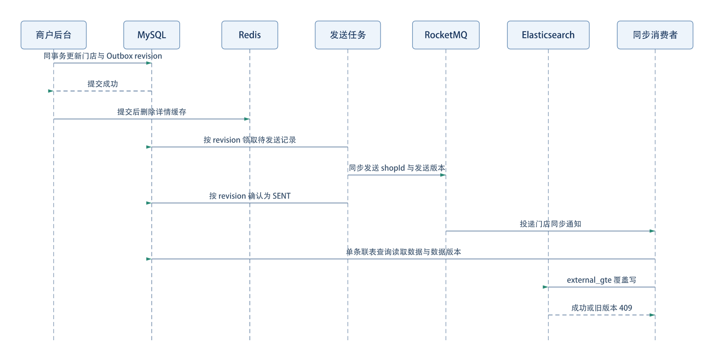
Redis 失效仍由提交后事件处理，ES 同步使用 Outbox + MQ。两个步骤服务不同目标，没有把删除详情缓存也迁移到消息队列。
8.2、为什么一商户只保留一条记录
商户连续编辑名称、地址和营业时间，搜索副本最终需要的是完整最新门店数据，不必逐条回放每一次编辑快照。因此主键使用 shop_id，重复写入时重置为 PENDING，并递增 revision。
| 字段 | 含义 |
|---|---|
| shop_id | 门店 ID，也是 Outbox 主键 |
| state | PENDING 待发送 / SENT 已发送 |
| revision | 随门店写事务递增的同步版本 |
| next_send_time | 领取租期与失败退避时间 |
| last_error | 发送或死信核查的错误信息 |
事件行上的版本需要持久保留，不能单独清空 Outbox 后继续沿用旧 ES 索引版本。当前不引入事件历史归档或审计回放平台。
8.3、发送确认为什么必须带 revision
设版本 V 的发送尚未确认，商户又提交了 V+1。此时同一行已经代表新的待同步任务。如果旧发送只按 shop_id 把 PENDING 改为 SENT，就会抹掉 V+1 的待办。
修复后，领取、成功确认、发送失败退避都带本次版本条件。旧任务完成时影响行数为 0，就不会触碰新版本。
源码摘录：ShopSyncEventMapper.java，第 33—35 行；以下为方法内片段或原声明。
@Update("UPDATE tb_shop_sync_event SET state='SENT',last_error=NULL,update_time=NOW() "
+ "WHERE shop_id=#{id} AND state='PENDING' AND revision=#{revision}")
int sent(@Param("id") Long id, @Param("revision") Long revision);
注意，SENT 只表示这次通知已由 Broker 确认接收。ES 是否完成同步还要看消费与实际文档，不能把发出状态当作搜索结果状态。
8.4、每次重读 MySQL，为什么仍可能写旧
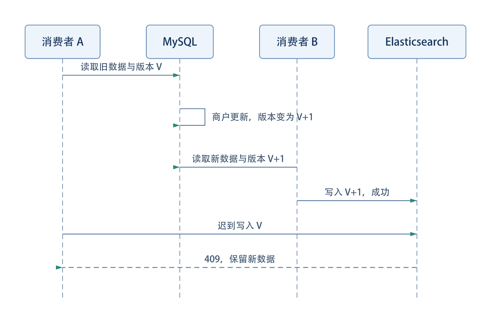
消费者 A 先查到旧数据，但发往 ES 的请求慢；商户更新后，消费者 B 查到新数据并先写成功；随后 A 的旧请求到达，就可能把新值覆盖回去。
所以项目通过一条联表查询读取门店完整数据和对应版本，再把这个版本传给 ES。不能先取数据，隔一会儿再查新版本；也不能把消息里旧发送批次的版本套到刚读出的新数据上。
源码摘录：ShopSyncEventMapper.java，第 49—51 行；以下为方法内片段或原声明。
@Select("SELECT s.*,COALESCE(e.revision,1000000000000) AS sync_revision "
+ "FROM tb_shop s LEFT JOIN tb_shop_sync_event e ON e.shop_id=s.id WHERE s.id=#{id}")
Shop shopForSync(@Param("id") Long id);
版本在现有 Outbox 行递增，商户表没有新增版本列。Shop.syncRevision 是联表结果承载字段，标记 exist=false，不作为商户表字段，也不输出到接口。
8.5、external_gte 的处理规则
ES 普通索引写入按请求到达顺序覆盖。增量同步现在使用 external_gte：传入版本不小于当前版本时允许写入；更旧的版本产生 409 冲突。
源码摘录：ShopSearchServiceImpl.java，第 340—353 行；以下为方法内片段或原声明。
IndexRequest request = new IndexRequest(EsConstants.SHOP_INDEX)
.id(shopId.toString())
.source(JSONUtil.toJsonStr(doc), XContentType.JSON)
.version(shop.getSyncRevision()).versionType(VersionType.EXTERNAL_GTE);
// ⑤ 真正执行写入（全量覆盖写）
try {
client.index(request, RequestOptions.DEFAULT);
} catch (ElasticsearchStatusException error) {
// 同版本重试由 external_gte 接受；旧版本返回 409 表示新数据已在 ES，直接确认。
if (error.status() != RestStatus.CONFLICT) {
throw error;
}
}
}
同版本对应的是同一次已提交门店快照，所以可以重复写。旧版本 409 表示 ES 已经拥有更新版本，本次消息可以结束；其他失败继续抛出，让 MQ 重试。
为兼容已有 ES 文档的小整数内部版本，升级列使用高位起点；无事件的历史门店读取基线版本，第一笔事件版本高于基线。它是本项目的迁移约定，不是“时间戳越大越安全”的通用技巧。
8.6、死信怎样保留人工处理入口
门店同步与订单补偿不同：同步失败没有库存需要归还。消费重试耗尽后，死信消费者记录 last_error 并输出核查日志。这个写错误的 SQL 允许匹配 SENT，但必须限定消息对应的 revision，防止旧死信覆盖新更新的记录。
确认 ES/MQ 恢复后，维护人员按已核查的商户与版本，把状态重置为 PENDING 重新发送。重放不改门店数据，因此不额外递增版本。当前这里没有自动无限重放死信。
对应实现：ShopSyncEventMapper.java、ShopSyncPublisher.java、ShopSyncConsumer.java、核查与验收说明。
本章自测： 同商户更新合并，是否意味着永远只会发一条 MQ 消息？不是。领取前的更新可能合并，发送过程中的新更新仍需要新通知；发送结果未知也允许同版本重复投递。
9、探店笔记与轻社交：保留用户真正会走的路径
9.1、一篇笔记怎样与门店发生联系
用户在门店详情可以阅读关联笔记；发布笔记时，需要选择真实存在的门店。保存前检查标题、正文、图片地址数量与长度，再构造一个新的 Blog 实体，只复制允许填写的字段。
作者 ID 来自 UserHolder，点赞数和评论数由服务端初始化。不能因为 Controller 收到了一个 Blog 对象，就把客户端传来的 userId、liked 或 id 原样持久化。
源码摘录：BlogServiceImpl.java，第 69—72 行；以下为方法内片段或原声明。
Blog blog = new Blog().setUserId(UserHolder.getUser().getId()).setShopId(input.getShopId())
.setTitle(input.getTitle().trim()).setContent(input.getContent().trim())
.setImages(input.getImages()).setLiked(0).setComments(0);
return save(blog) ? Result.ok(blog.getId()) : Result.fail("发布笔记失败");
当前保留了图片上传、内容阅读、门店关联和笔记列表；评论数字段初始为 0，不表示已经实现评论发布与审核功能。上传入口要求登录，图片地址串的校验也不等于完整的图片所有权和内容审查。
9.1.1、上传一张图片，文件和地址分别去哪里
图片上传与发布笔记是两次请求。先上传文件拿到路径，再把选中的图片路径与正文一起提交到 /blog。数据库保存的是图片地址串，图片二进制内容保存在本地静态目录。
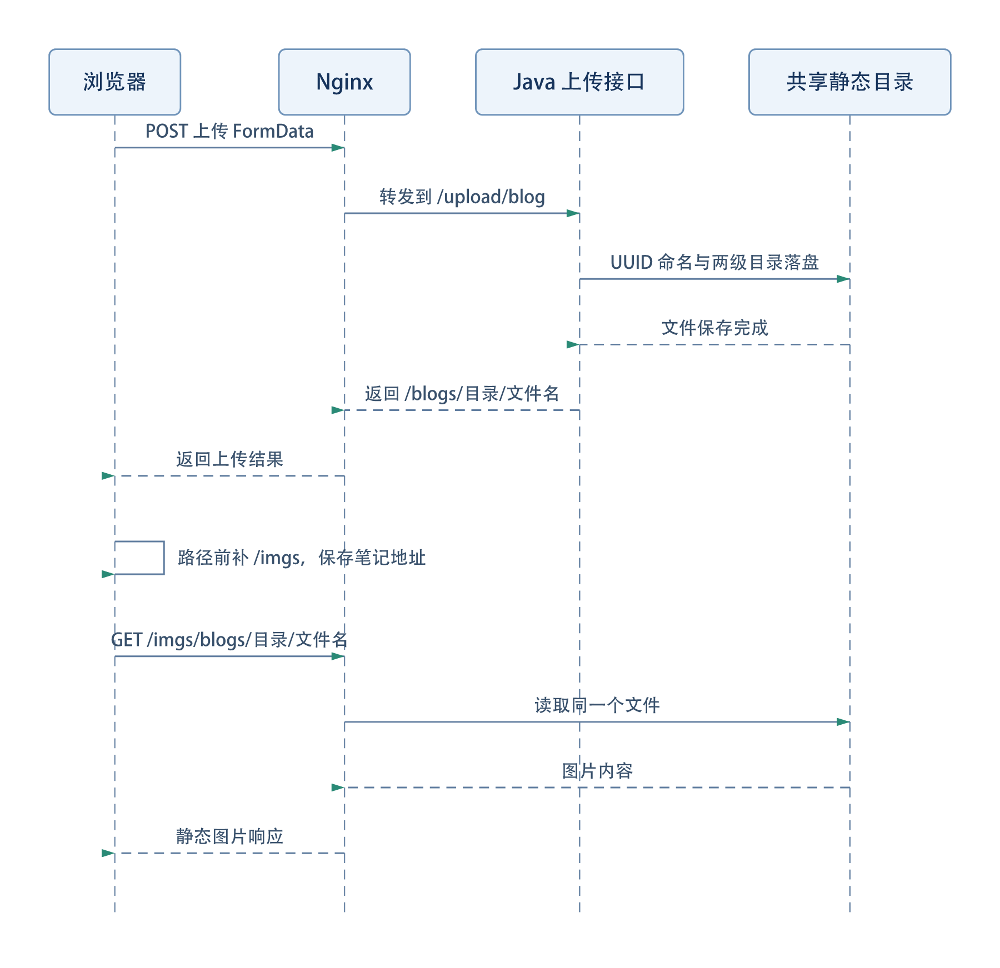
blog-edit.html选择文件，构造FormData，字段名为file，请求/upload/blog；该接口经过消费者登录检查。UploadController取原文件后缀，生成 UUID，并用 UUID 的 Hash 低两组 4 位构造两级目录。MultipartFile.transferTo()写入SystemConstants.IMAGE_UPLOAD_DIR下的目标位置，返回/blogs/d1/d2/UUID.后缀。- 前端补上
/imgs，得到/imgs/blogs/d1/d2/UUID.后缀，用于预览和最终笔记字段。 - 浏览器 GET 这个路径时，由 Nginx 从静态目录读取文件；不需要再调用 Java 上传接口。
源码摘录：UUID 文件名与散列目录。
源码摘录：UploadController.java，第 42—56 行。
private String createNewFileName(String originalFilename) {
// 获取后缀
String suffix = StrUtil.subAfter(originalFilename, ".", true);
// 生成目录
String name = UUID.randomUUID().toString();
int hash = name.hashCode();
int d1 = hash & 0xF;
int d2 = (hash >> 4) & 0xF;
// 判断目录是否存在
File dir = new File(SystemConstants.IMAGE_UPLOAD_DIR, StrUtil.format("/blogs/{}/{}", d1, d2));
if (!dir.exists()) {
dir.mkdirs();
}
// 生成文件名
return StrUtil.format("/blogs/{}/{}/{}.{}", d1, d2, name, suffix);
d1 = hash & 0xF、d2 = (hash >> 4) & 0xF 的结果各为 0—15，因此有 16 × 16 种两级目录组合。它们由 UUID 的 Hash 决定，不是按用户 ID 分目录，也不是文件内容哈希去重。
文件扩展名来自原文件名；重命名不会自动把图片转码，也不代表已校验文件真实内容。当前 UUID 命名主要减少文件名冲突、避免直接使用客户端原名，散列目录则分散单目录文件数量。
9.1.2、为什么后端说上传成功，Nginx 还可能 404
上传目录按 JVM 的 user.dir 拼接为 src/main/resources/nginx-1.18.0/html/hmdp/imgs。当前 Nginx 挂载项目里的 html 目录，并以其中 hmdp 为站点根目录；两端只有指向同一批文件，返回的 URL 才能读到。
| 名称 | 当前含义 |
|---|---|
| Java 落盘目录 | 项目工作目录下的 .../html/hmdp/imgs |
| 接口返回路径 | /blogs/d1/d2/UUID.后缀 |
| 前端拼出的图片 URL | /imgs/blogs/d1/d2/UUID.后缀 |
| Nginx 文件来源 | 挂载到 /usr/share/nginx/html 的宿主机项目目录 |
用 jar 启动时，user.dir 是进程工作目录，不自动等于 jar 所在目录。部署后端容器时，需要把上传目录改为明确配置，并让后端可写目录与 Nginx 可读目录共用正确的数据卷；仅把 jar 放进镜像，不会自动共享上传文件。
上传成功、笔记尚未提交或提交失败时，文件可能已存在而没有业务记录引用。当前草稿删图只移除前端列表项，不物理删除文件，也没有文件所有权表和孤立文件清理任务。这解释了当前两次请求的实际边界，后续按存储与部署需求再扩展。
源码：UploadController、SystemConstants、发布页、Nginx 配置。
9.2、点赞为什么使用 ZSet
一个笔记对应 blog:liked:<blogId>。其中 member 是用户 ID，score 是点赞时间戳。这样既能查询某人是否点赞，也能按时间取最近点赞的用户。
数据库中保存笔记点赞总数，Redis 中保存点赞成员。操作流程是先读当前状态，再执行增加或移除；真正是否调整数据库计数，以 ZADD 或 ZREM 的实际返回值为准。
源码摘录：BlogServiceImpl.java，第 107—124 行；以下为方法内片段或原声明。
Double score = stringRedisTemplate.opsForZSet().score(key, userId.toString());
if (score == null) {
// 3.未点赞 → 点赞：ZSet 加入（score=时间戳），数据库 liked + 1
// 并发请求都读到未点赞时，只有真正新增member的请求增加计数。
if (Boolean.TRUE.equals(stringRedisTemplate.opsForZSet()
.add(key, userId.toString(), System.currentTimeMillis()))) {
update().setSql("liked = liked + 1").eq("id", id).update();
}
} else {
// 4.已点赞 → 取消点赞：ZSet 移除，数据库 liked - 1
Long removed = stringRedisTemplate.opsForZSet().remove(key, userId.toString());
// ZREM返回实际移除数量：另一个请求已移除时为0，不能再次减计数。
// GREATEST只防止计数减成负数，不负责修复原有Redis/MySQL差异。
if (removed != null && removed > 0) {
update().setSql("liked = GREATEST(liked - 1, 0)").eq("id", id).update();
}
}
return Result.ok();
例如两个请求都看到“未点赞”，只有实际新增 member 的那个请求增加计数；取消点赞时，只有实际移除数量大于 0 才扣计数。
但这里仍是一个切换接口：顺序请求两次，可能是点赞再取消。Redis 修改与 MySQL 计数也不是一个跨存储事务，所以不能将它宣传成可任意重放或 Exactly-once 的点赞接口。
9.3、最近点赞者为什么要恢复数据库返回顺序
从 ZSet 倒序取最近 5 位点赞者，得到的是按时间排序的 ID 列表。但 SQL 的 WHERE id IN (...) 不承诺按列表顺序返回。项目用 ORDER BY FIELD(id,...) 恢复顺序，最后只返回公开用户信息。
这里的排序对象是“最近点赞者”，不是粉丝数量榜，也不是用户热度榜。
9.4、关注只保留 MySQL 这一份关系
当前 tb_follow 是关注关系的唯一来源。用户可以关注或取关作者，再通过自己的关注作者列表进入作者页面。没有额外双写 Redis Set，也没有粉丝 Feed 收件箱。
这样做减少了关系双写和动态分发的一致性成本。这个项目的核心仍然是找店、探店与抢购，关注只承担“记住作者”的轻量需求。
9.5、首次关注为什么先锁用户，再普通查询
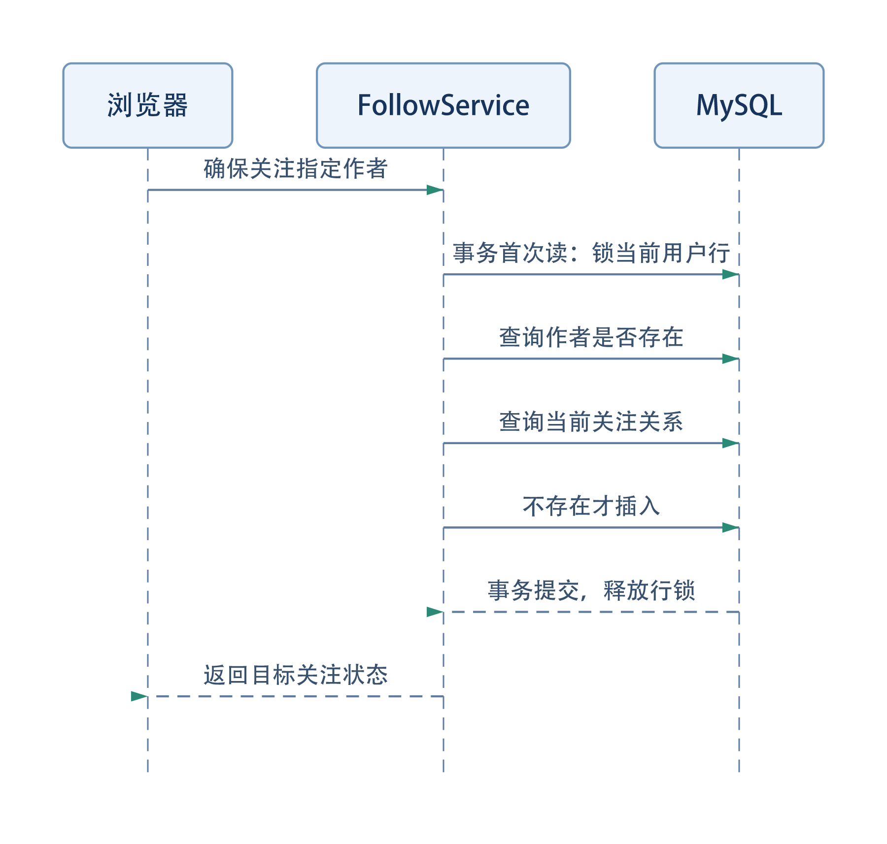
关注关系在首次插入前可能不存在，所以不能指望锁住一条还不存在的关系行。当前实现锁定“当前用户”的主键行，让同一用户的关注修改串行执行。
更细的一点在于 MySQL 的 REPEATABLE READ：如果先普通查询作者，建立了旧快照，再等待用户锁，拿锁后的关系查询可能仍看不到刚才另一事务插入的记录。当前方法把第一次数据库访问留给 SELECT ... FOR UPDATE，随后再查询作者与关注关系。
源码摘录：FollowServiceImpl.java，第 50—67 行；以下为方法内片段或原声明。
User current = userService.query().eq("id", userId).last("FOR UPDATE").one();
if (current == null) {
return Result.fail("当前用户不存在，请重新登录");
}
// 必须在锁之后查询作者，避免REPEATABLE READ在等待锁之前就建立旧Read View。
if (userService.getById(followUserId) == null) {
return Result.fail("作者不存在");
}
// 两个条件必须同时存在：只修改“当前用户 → 指定作者”，不能按作者ID删掉所有人的关注。
LambdaQueryWrapper<Follow> relation = new LambdaQueryWrapper<Follow>()
.eq(Follow::getUserId, userId).eq(Follow::getFollowUserId, followUserId);
if (Boolean.TRUE.equals(isFollow)) {
// 持有用户锁时再查关系；前一请求已经提交的关注可以被当前新建快照读到。
if (count(relation) == 0) {
Follow follow = new Follow();
follow.setUserId(userId);
follow.setFollowUserId(followUserId);
save(follow);
这个约束依赖当前 HTTP 通过事务代理进入该方法，且锁前没有外层事务已经建立的旧快照。如果未来把它复用进其他长事务，应重新检查调用前提。当前没有给 tb_follow 新加唯一索引，不能把服务层约束说成所有直接写表程序都会遵守的数据库约束。
9.6、公开阅读与登录写入怎样分开
首页笔记、门店笔记、作者公开资料允许匿名访问；本人资料、发布、上传、点赞、关注需要登录。公开资料通过 DTO 或明确的字段白名单返回，不直接序列化完整用户实体。
MVC 白名单没有简单放开 /blog/** 或 /user/**，而是限定读取路径及数字 ID，防止顺手放开写接口。
本章自测： 作者主页公开，能否因此放开 /user/me？不能。作者公开资料与当前登录者的个人身份是两种资源。
10、商户与平台后台：谁能改数据，由服务端决定
10.1、商户端的目标是“维护我自己的店”
商户通过独立登录页进入后台，读取自己的店铺信息，再编辑名称、分类、地址、图片、坐标和营业时间等字段。前端表单服务于使用体验，服务端再次校验字段范围和店铺归属。
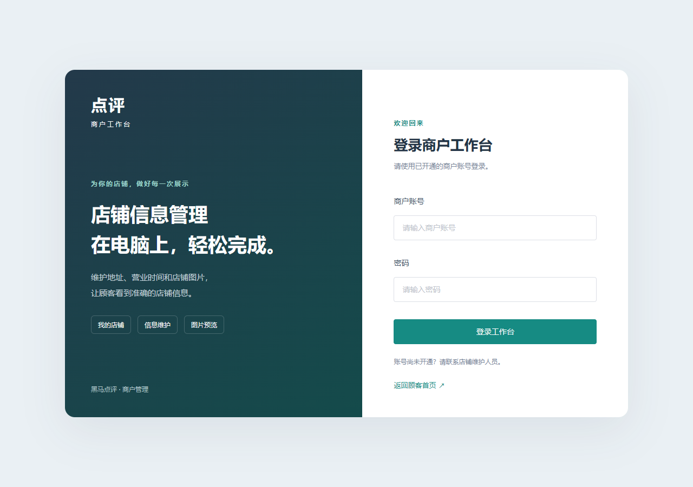
图 10-1：商户后台登录入口实拍；截图不包含账号、密码或已登录会话。
关键点是：目标店铺从当前商户身份确定，不相信客户端随意传来的店铺 ID。更新 SQL 同时限定店铺 ID 和 ownerId；编辑请求只允许白名单字段进入更新。
源码摘录：ShopServiceImpl.java，第 78—90 行；以下为方法内片段或原声明。
LambdaUpdateWrapper<Shop> update = new LambdaUpdateWrapper<Shop>()
.eq(Shop::getId, previous.getId()).eq(Shop::getOwnerId, merchantId)
.set(Shop::getName, input.getName().trim()).set(Shop::getTypeId, input.getTypeId())
.set(Shop::getImages, input.getImages().trim()).set(Shop::getArea, trim(input.getArea()))
.set(Shop::getAddress, input.getAddress().trim()).set(Shop::getX, input.getX())
.set(Shop::getY, input.getY()).set(Shop::getAvgPrice, input.getAvgPrice())
.set(Shop::getOpenHours, trim(input.getOpenHours()));
if (baseMapper.update(null, update) != 1) {
throw new IllegalStateException("店铺更新数量异常");
}
// 两件事：①发内存事件让提交后监听器删 Redis 详情缓存 ②落 Outbox 记录走 MQ 可靠同步 ES。
eventPublisher.publishEvent(new ShopChangedEvent(previous.getId()));
shopSyncEventService.record(previous.getId());
这条更新与 Outbox 写入在同一事务中。商户看到“保存成功”意味着 MySQL 已提交，Redis 失效已尝试，ES 则等待后台同步和自身刷新后可见。
10.2、为什么读编辑表单直接查数据库
商户正在编辑的是权威业务数据。若编辑表单也从消费者详情缓存读取，刚保存的新值可能被旧缓存覆盖回表单。因此 queryOwnShop() 直接按 ownerId 查 MySQL，不经过消费者缓存。
消费者详情与后台编辑复用门店表，但不同读取目的可以使用不同路径，不必为了“代码复用”让两种需求承担同一份缓存语义。
10.3、发布优惠券与开放写接口
商户发券进入受保护的后台接口。店铺归属由当前商户身份决定，不开放游客修改任意店铺或优惠券的公共写入口。
秒杀券的数据库库存、活动时间窗和 Redis 初始库存需要对应。新增券和开始抢购前，按服务端校验与库存初始化路径准备数据；不能只在前端按钮上写一个库存数字。
10.4、平台端管理账号，不代替商户编辑
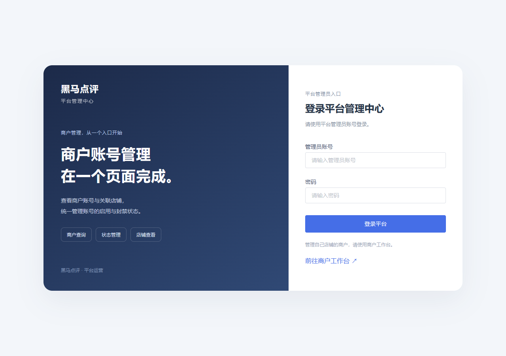
平台可以分页查商户账号，按账号、名称、店名或商圈搜索，并启用、停用账号。店铺编辑继续走商户自己的入口，当前没有扩展成完整 RBAC 权限中心。
平台列表查询先确定匹配范围，再分页，避免“先分页再筛选”造成总数与页码失真。一页内的关联店铺和分类批量查询，减少逐行读取造成的 N+1 查询。
停用操作同时递增商户会话版本，认证时核对该版本，达到撤销旧会话的效果。这个过程不需要扫描 Redis 全部 token。
10.5、前端也有自己的状态管理
门店搜索条件变化时，旧请求可能比新请求更晚返回。shop-search.js 使用版本标记忽略过时响应，并区分加载中、成功、失败与没有更多内容。
同样，聚合查询失败不能显示成“0 家”；抢购受理不能显示成“已成功”。这些页面状态是业务准确性的一部分，并不是只要接口返回 200 就能忽略的展示细节。
11、把项目跑起来，再按层验证
11.1、先分清本机部署位置
本机中间件由 deploy/compose.yaml 统一管理；Spring Boot 后端在 Windows 上运行。Nginx 在容器中，因此代理宿主机应用时使用 host.docker.internal:8081，不能写成容器自己的 127.0.0.1:8081。
| 服务 | 本机访问端口 | 说明 |
|---|---|---|
| Nginx | 8080 | 页面和 API 统一入口 |
| Spring Boot | 8081 | Windows 上的后端进程 |
| MySQL | 3307 | 避开本机其他学习项目占用的 3306 |
| Redis | 6379 | 当前 Compose 镜像为 6.2.4 |
| ES | 9200 | 7.17.24，配套 IK |
| MQ NameServer | 9876 | 服务发现入口，不是 Broker 业务端口 |
| MQ Broker | 10911 / 10909 | 消息客户端连接相关端口 |
Compose 中部分镜像使用主版本或滚动标签，例如 MySQL 8.0、Nginx alpine；这里按当前配置说明，不将标签当作永久固定的补丁版本。
11.2、建议启动顺序
- 启动 Docker Desktop，执行项目的
start-all.bat或按部署说明启动 Compose。 - 确认数据卷和本地配置就绪；新环境按建表、种子数据和后续迁移的顺序初始化。
- 核对秒杀申请表、订单唯一索引、商户归属及 Outbox 版本列。
- 创建需要的普通 Topic 和死信 Topic，确认 Broker 地址能从宿主机访问。
- 运行后端，再打开消费者、商户、平台入口。
# 在项目根目录执行；确认 Docker Desktop 已就绪。
docker compose -f deploy/compose.yaml up -d
# 查看容器是否处于预期状态。
docker compose -f deploy/compose.yaml ps
# 本轮已验证过的独立修复包；普通开发也可以在 IDEA 中启动主类。
java -jar target/hmdp-p4-fixed.jar
不要重复启动两个监听 8081 的后端。 start-all.bat 启动的是基础服务，不自动保证数据库已执行全部后续迁移，也不自动保证业务 Topic 已创建。
新环境可从 部署说明、MQ 设计 和 商户同步迁移说明 继续操作。本地配置包含连接信息，按模板在本机准备，不把密码复制进讲义。
11.3、Outbox 的升级有两个脚本
database/migrations/20261030-shop-sync-outbox.sql 建原 Outbox 表
database/migrations/20261030-shop-sync-revision.sql 增加递增版本列
版本列升级脚本是一次性的 ALTER，不应反复执行。本机本轮已完成升级。秒杀相关迁移和唯一约束检查由各自的脚本及启动自检承担，不要拿 Outbox 脚本代替整套数据库初始化。
外部数据卷保持原有命名，绑定挂载的前端目录也需要存在。复制工程时，只复制 Compose 文件而漏掉挂载内容或初始化步骤，并不等于复制了可运行环境。
11.4、验证要区分四个层次
| 层次 | 能回答什么 | 典型方式 |
|---|---|---|
| 编译与打包 | Java 类型、依赖和打包配置是否成立 | Maven compile/package |
| 自动测试 | 特定逻辑和回归场景是否成立 | JUnit、Mockito、本地 HTTP 替身 |
| 真实组件验证 | 实际 SQL、ES 版本规则是否如预期 | MySQL 临时表、ES 临时索引 |
| 接口与页面联调 | 用户操作能否走通，展示是否正确 | 浏览器、真实请求、状态核查 |
性能则是另外一层，需要固定机器、数据、并发模型和指标再测试。本文没有将“用了 Redis/MQ”换算成任何 QPS 或吞吐量数字。
11.5、本轮有哪些可追溯证据
以下是 2026-10-30 商户同步修复阶段实际留下的记录，并不是重新跑遍全部故障场景后的生产验收：
| 证据 | 结果 | 覆盖范围 |
|---|---|---|
| 商户事务与同步定向测试 | 12 项通过，包含在后续回归中 | 事务写 Outbox、消费异常、死信记录、HLRC 版本写入 |
| MySQL 连接级临时表 | 9 项通过 | 回滚、条件领取、旧确认隔离、死信与版本联表 |
| 真实 ES 临时索引 | 新版成功、旧版 409、同版重试成功 | 外部版本的实际服务行为 |
| 排除一项既有秒杀调度夹具后的回归 | 共 100 项，94 通过、6 默认跳过 | 当前默认可执行的其余回归 |
| 独立修复包 | 打包及包内类检查通过 | target/hmdp-p4-fixed.jar |
完整默认测试还有一项 SeckillSchedulingTest 的夹具缺少 VoucherOrderMapper Bean，测试上下文启动失败，尚未纳入本轮修复。显式维护与集成测试默认跳过，跳过不算已经通过。
本讲义制作阶段启动了修复版后端，公开门店搜索和笔记接口返回正常，并拍摄页面截图；本轮未为截图操作用户密码、商户资料或抢购订单，也未执行索引重建。
11.6、遇到报错，先沿请求链找根因
| 看到的现象 | 先核对 | 再往哪里看 |
|---|---|---|
| 页面打开但 API 502 | 8081 是否监听、Nginx 后端地址 | 后端启动日志、容器到宿主机连接 |
| 无路由或找不到 Topic | Topic 是否创建、Broker 是否注册 | NameServer 地址、Broker 对外地址 |
| Outbox 一直 PENDING | 到期时间、领取条件、发送异常 | MQ 路由和 Broker 发送结果 |
| Outbox 已 SENT 但 ES 没更新 | 消费日志、重试、死信、last_error | ES 文档版本及刷新、人工重放 |
| 抢购一直处理中 | 申请 state / reservation_state | 预占凭据、deadline、扫描任务 |
| 申请停在 CANCELLING | 释放脚本返回码和 Redis 归属 | 库存 Key 是否缺失、证据是否矛盾 |
| 搜索有结果但详情不一致 | ES 副本、Redis 详情缓存、MySQL 各自内容 | 商户提交后的删除与同步路径 |
排查时只读取必要字段，不把 token、验证码、密码或完整连接串粘到公开记录里。恢复数据之前，先确认自己看的到底是申请、订单、缓存还是检索副本。
12、项目复盘：能够讲清楚的设计，才是自己的项目
12.1、用一条完整故事介绍它
可以这样开始：
这个项目从黑马点评课程工程改造，围绕门店发现、优惠券抢购和探店笔记组织功能。消费者的分类、附近和组合搜索统一走 ES，详情走 Redis 缓存与 MySQL；抢购先持久化申请，再由后台完成 Lua 预占、MQ 发送和事务落单；商户改店时在同事务记录 Outbox，随后可靠通知 ES，并用版本规则处理迟到写入。
接下来选一个自己最熟悉的问题展开，例如“网络超时时为什么不能直接退库存”或“重读数据库为什么还会旧覆盖”。不要一口气背完所有组件名字。
12.2、每个关键设计都对应一个具体问题
| 设计 | 解决的具体问题 | 付出的成本 |
|---|---|---|
| Redis 会话与 DTO | 请求间共享身份、减少个人字段传播 | 依赖 Redis，需处理过期与退出 |
| 空值缓存 | 重复查询不存在的门店 | 短期缓存“不存在”，新增后需失效 |
| ES 统一检索 | 多条件筛选、排序和统计口径分裂 | 新增索引与同步维护 |
| 持久化申请 | 预占、发送之间退出后无法找回 | 多一张申请表与恢复状态 |
| UNKNOWN 意图 | 网络超时导致预占结果无法判断 | 需要证据与人工核查边界 |
| 条件发送与消费幂等 | 多实例扫描、重复通知 | 状态检查、条件 SQL 和唯一约束 |
| CANCELLING | 终止裁决与释放确认不是同一步 | 补偿任务与中间态 |
| Outbox revision | 旧发送确认覆盖新待办 | 一列持久版本及条件更新 |
| ES 外部版本 | 迟到旧写覆盖新文档 | 同快照数据版本与冲突处理 |
| 轻社交裁剪 | 缺少实际需求却维护多份关系和收件箱 | 放弃 Feed 等非核心功能 |
12.3、当前能力与后续方向
当前主线已经覆盖门店检索、身份与权限、缓存、异步落单、恢复和商户搜索同步。仍需按当前实现描述下面这些范围：
- 订单成功创建后，没有完整的真实支付、退款、核销和待支付超时关单链路。
- 部署是本机单体与单 Broker 演示形态，没有建设生产高可用集群。
- 没有提供标准负载模型下的压测报告，不能凭框架推导系统容量。
- 门店同步死信保留人工核查与显式重放；点赞跨 Redis/MySQL 的差异也仍需按实际故障处理。
- 手机实时定位、评论体系和 Feed 不属于当前已实现范围。
如果继续投入，优先补足当前业务需要的验收和恢复操作，再决定是否实现支付关单或压测。没有必要为了让简历出现更多名字，同时引入第二套消息队列、微服务注册中心或通用工作流平台。
12.4、建议的源码阅读顺序
第一遍：只追正常路径。
登录：UserController → RefreshTokenInterceptor → LoginInterceptor
详情：ShopController → ShopServiceImpl.queryById → CacheClient
检索：ShopSearchDTO → ShopDoc / EsConstants → ShopSearchServiceImpl.search
抢购：VoucherOrderController → VoucherOrderServiceImpl → create
后台：SeckillRecovery → prepare → Publisher → Consumer → consume
同步：updateOwnShop → record → ShopSyncRecovery → Publisher → syncById
第二遍：只追失败恢复。
订单：UNKNOWN 如何提交 → 发送结果未知 → 超时裁决 → CANCELLING → compensate
门店：旧 revision 的确认 → ES 409 → 消费重试 → 死信错误 → 人工重放
社交：并发首次关注 → 用户行锁顺序 → 点赞返回值 → 跨存储边界
第三遍：把图关掉，自己复述。 用“谁发起、在哪里落事实、下一步由谁推进、失败后从哪里恢复”四个问题检查理解。如果只记得注解名字，却说不出表里的状态在什么时候提交，就回到对应章节与方法再看一遍。
12.5、十五个适合复习和面试准备的问题
- 公开页面为什么也需要先尝试识别消费者身份？
- Redis 没有 Key，与缓存了空字符串，各自意味着什么？
- ES 的关键词与范围条件为什么分成 must 和 filter？
- 请求已受理、Broker 已接收、订单已创建，分别由什么事实证明？
- 为什么不能把 Redis 调用超时直接解释为预占失败？
- 为什么 NONE → UNKNOWN 必须在调用 Redis 前独立提交？
- 订单已存在时，重复通知应该重新扣库存吗？
- CANCELLING 为什么不能省成一个 FAILED？
- 商户同步为什么同时需要条件确认和 ES 版本保护？
- 关注行锁为什么必须放在该事务的第一次普通数据库查询之前？
- prepare 使用同一个 TransactionTemplate，为什么两次回调仍是两个独立事务？
- check 返回 0 后，为什么 reserve 仍可能失败？
- 当前 Redisson 的锁 Key、持有者字段和 watchdog 各自负责什么？
- 当前 RedisIdWorker 时间回拨时，唯一性和单调性分别怎样变化？
- 上传接口已成功，为什么换一个 jar 工作目录后图片 URL 仍可能 404？
附录 A、关键入口与资料索引
| 类型 | 阅读入口 |
|---|---|
| 消费者登录 | UserController |
| 身份识别与访问控制 | WebMvcConfig |
| 商户详情与更新 | ShopServiceImpl |
| 缓存工具 | CacheClient |
| ES 检索与增量写入 | ShopSearchServiceImpl |
| 申请生命周期 | SeckillRequestService |
| 申请行锁与恢复查询 | SeckillRequestMapper |
| Redis 预占调用 | SeckillReservationService |
| 预占与释放脚本 | 预占 Lua、释放 Lua |
| 申请后台推进 | SeckillRecovery |
| 门店同步 SQL | ShopSyncEventMapper |
| 门店变更落 Outbox | ShopSyncEventService |
| 笔记与点赞 | BlogServiceImpl |
| 关注关系 | FollowServiceImpl |
| 部署 | 当前部署说明 |
| MQ 进一步设计 | MQ 设计说明、既有审查记录 |
| 本轮门店同步修复 | 修复与验收说明 |
| 轻社交详细补充 | 第 8—12 章源码详解 |
附录 B、配图与使用方法
本文图片使用相对路径 assets/hmdp-guide/。复制讲义时，请保留这个目录与 Markdown 的相对位置；只复制一个 .md 文件会丢失图片。
01-architecture.drawio：架构总览的原生可编辑图。02至15的.mmd：各流程与时序的文本源图；同名.svg、.png为输出。ui-*.png：本机浏览器实拍，包含消费者页面与后台登录入口。build_figures.py：流程图重建脚本，依赖本机已配置的 Pretty Mermaid。capture_pages.cjs：公开页面截图脚本，依赖本机 Playwright 与 Edge；不执行登录或业务表单提交。
正文代码块使用普通文本格式，以保留正常字形的代码注释。带有“源码摘录”的内容来自当前工程；“精简示意”只用于解释结构。源码未来变化时，应同步更新摘录和流程图。
课程来源说明：参考《Redis 实战篇》的问题驱动与分步讲解结构，本文重新撰写项目说明并制作配图；课程工程的原作者信息继续保留在源码中。